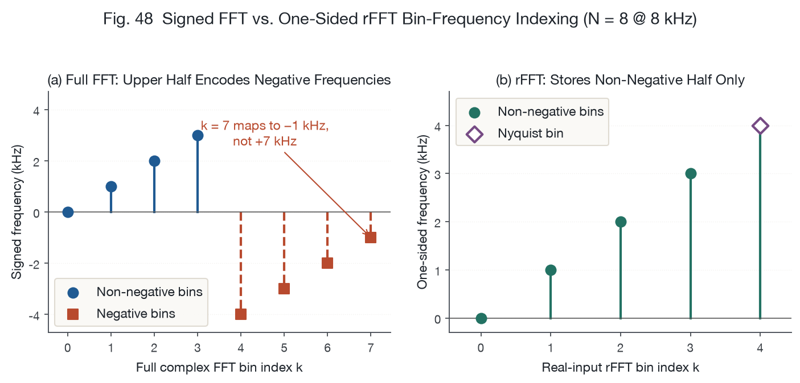
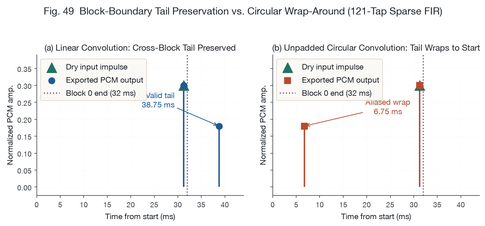
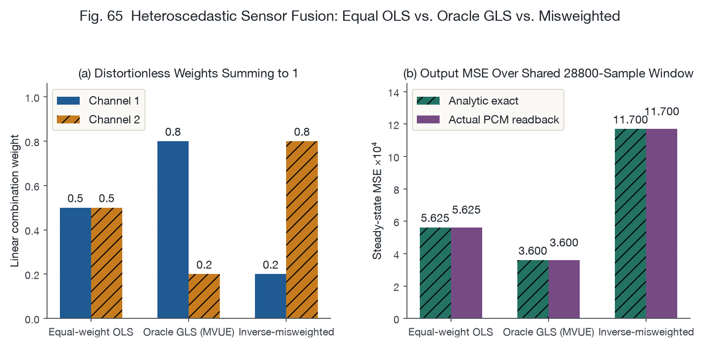

On this page
⚠️ This chapter is Chapter 16, i.e., Appendix A (the main text comprises 16 chapters, Chapters 0–15, of which Chapters 12–15 are four extended special topics, followed by Appendices A and B). It may be consulted independently; see the navigation links below for adjacent chapters.
Overview: 🏠 Course Overview | Previous: Chapter 15 · Conditioned Target Extraction & Diarization | Next: Chapter 17 · Appendix B: Literature Map, Triage & Exercises
Chapter 16 · Appendix A: Symbols, Glossary, and Mathematical Reference
This appendix works in tandem with Chapter 0: Mathematical Foundations and Signal Analysis Preliminaries, with a clear division of responsibilities: Chapter 0 is structured for systematic study, offering complete step-by-step derivations and 16 foundational exercises (E00-01–E00-16) across trigonometry and 3D rotational geometry, Fourier/STFT analysis, subspace projections and SVD, Rayleigh quotients and tensor products, Wirtinger variational optimization, circularly symmetric complex Gaussians and Kalman recursion, and acoustic special functions; this appendix serves as a desk-side global notation standard, comprehensive technical glossary, and compact formula quick-reference manual, supplemented in §16.4 by 21 hands-on verification exercises (E16-01–E16-21) targeting matrix dimensions, conjugation signs, and fixed-point quantization readback boundaries, followed by Appendix B. Whenever an unfamiliar symbol or term appears in the main text, check §16.1–§16.3 first to align conventions rapidly; when full theorem proofs are needed, jump directly via Chapter 0 §0.8.
16.1 Table of Symbols
The typographic conventions throughout this monograph match §2.3: italics denote scalars, overhead arrows denote column vectors, and bold uppercase letters denote matrices; superscript $^H$ denotes conjugate transpose (Hermitian transpose), superscript $^\top$ denotes ordinary transpose without conjugation, and a circumflex $\hat{\ }$ denotes an estimator. Following standard speech signal processing convention, uppercase italic letters carrying a frequency index or time–frequency argument—such as $X(f)$, $X(f_k,\ell)$, or discrete bracketed notation $X_m[k,\ell]$—represent complex scalars at an individual frequency bin or time–frequency cell.
This monograph adopts the forward Fourier kernel $e^{-\mathrm{j}2\pi ft}$ uniformly, where $\mathrm{j}=\sqrt{-1}$ is the imaginary unit.
The planar array geometric reference frame is defined as follows: Microphone 1 sits at the origin $x=0$, and Microphone 2 lies along the $+x$ semi-axis; the broadside direction ($+y$-axis) is labeled $0^\circ$, with positive azimuth measured clockwise toward Microphone 2 ($+x$-axis); the unit direction vector $\vec{u}$ points from the array reference origin toward the sound source, so the acoustic wave propagation vector is $-\vec{u}$.
Spherical-harmonic-domain formulas conventionally switch to azimuth $\alpha$ measured counterclockwise from the $+x$-axis and polar angle (colatitude) $\vartheta$ measured downward from the $+z$-axis. Before interfacing with our source azimuth $\theta$ (measured clockwise from $+y$ toward $+x$) and elevation $\phi_{\mathrm{el}}$ (measured upward from the horizontal plane toward $+z$), apply the coordinate conversion $\alpha=\pi/2-\theta$ (wrapped modulo $2\pi$) and $\vartheta=\pi/2-\phi_{\mathrm{el}}$ prior to evaluating spherical harmonic basis functions or calling third-party library APIs; see §5.8. Likewise, international standard AmbiX and First-Order Ambisonics (FOA) adopt a 3D right-handed coordinate frame with $+x$ pointing due front, $+y$ due left, and $+z$ due up, measuring horizontal azimuth counterclockwise from $+x$ toward $+y$ and elevation upward toward $+z$; for a complete conversion table against the planar array frame above ($+y$ front, clockwise azimuth), see Extended Topic III §14.2.
Symbol and operator overloading (consistent with §2.3): Because array processing, adaptive filtering, dereverberation, and multi-target tracking grew out of distinct research communities, a single letter or operator may serve different roles across chapters. For example, this table writes wavenumber as $\kappa=2\pi f/c$ to distinguish it from discrete frequency-bin index $k$, whereas portions of the literature and local derivations still write $k$ for wavenumber, Chapter 6 §6.2.4 uses $\kappa\in[-1,1]$ for the IPNLMS proportionate mixing factor, and Chapter 7 locally uses $k$ for the WPE lag frame index; $D$ may denote array aperture or the PHD intensity function; $\lambda$ may denote acoustic wavelength, RLS exponential forgetting factor, WPE time-varying speech variance, or matrix eigenvalue; $K$ may denote source count or WPE prediction order; and $s$ may denote a source waveform or tracking state. The operator $\odot$ similarly follows dual domain conventions: in subspace and vectorized covariance dictionaries (§0.4.3, §3.3, §12.7, §16.3.11) it denotes the column-wise Khatri–Rao product, whereas in frequency-domain filtering, time–frequency masking, BSM phase projection, and FiLM feature modulation (§5, §6, §8, §14.5–§14.6, §15.1) it denotes the same-shape or broadcast Hadamard element-wise product. Always follow the explicit definition at the equation in question.
When indexing an STFT grid in this table, by default $k$ is the frequency-bin index, $\ell$ is the frame index, $n$ is the discrete time-sample index, and $t$ is continuous time. Individual chapters preserving classic sub-field notation declare their index ordering locally: for instance, $\vec{x}(k,n)$ in Chapter 5 is ordered (frequency bin, frame); $X_m(f,k)$ or $\vec{x}_{ft}$ in Chapter 8 is likewise ordered (frequency bin, frame) with $t$ denoting the discrete frame index. When cross-referencing equations across chapters, align the physical meaning of each axis first rather than assuming identical letters represent the same coordinate.
The one-sided spectrum of a real-valued signal spans $0\leq k\leq\lfloor N/2\rfloor$, corresponding to non-negative physical frequencies $f_k=kf_s/N$ (in Hz). When a full $N$-point DFT is stored in memory, the upper half of the index range represents negative frequencies: $k>N/2$ for even $N$ or $k>(N-1)/2$ for odd $N$ maps to $(k-N)f_s/N$. For even $N$, the Nyquist bin $k=N/2$ of a real signal is self-conjugate and is conventionally labeled $+f_s/2$ in a one-sided spectrum; never misread the trailing bins of a full DFT as new high-frequency components approaching $+f_s$. Exercise E16-06 works through an eight-point sequence bin by bin.
Whenever a unique signed representative frequency must be assigned to every bin of a full two-sided spectrum, this monograph follows the exact convention of NumPy's fftfreq:
$$f_k^{\mathrm{full}}= \begin{cases} kf_s/N,&0\leq k\lt \lceil N/2\rceil,\\ (k-N)f_s/N,&\lceil N/2\rceil\leq k\lt N. \end{cases}\tag{16-1}$$
For even $N$, the Nyquist bin is labeled $-f_s/2$ under the two-sided convention of Eq. (16-1) and $+f_s/2$ under the real-signal one-sided convention; because $e^{-\mathrm{j}\pi n}=e^{+\mathrm{j}\pi n}=(-1)^n$ takes identical values at every integer sample $n$, both labels refer to the exact same discrete bin rather than two independent observations. The NumPy fftfreq documentation and NumPy rfftfreq documentation specify these two index mappings respectively (verified against NumPy 2.5 online docs, 2026-09-28).
| Symbol | Meaning |
|---|---|
| $M$, $d$, $D$ | Number of microphones, inter-element spacing between adjacent sensors, total physical array aperture |
| $f_s$, $N$, $N_w$, $H$ | Sampling rate (Hz), DFT/FFT length $N$, STFT real analysis window length $N_w$ (samples, satisfying $N\geq N_w$; defaults to $N=N_w$ without intra-frame zero-padding, see §2.5 Eq. (2-5)), and hop size $H$ (sample advance between consecutive frame starts) |
| $N_{\mathrm{tar}}$ (Chapter 8 OverIVA) | Number of individually extracted target sources; satisfies $N_{\mathrm{tar}}\lt M$, distinct from $N$ counting all physical sources in Chapter 8 Eq. (8-1), while remaining background channels absorb mixed interference |
| $c$, $\lambda$, $f$, $f_k$ | Speed of sound (numerical examples typically use $343\ \mathrm{m/s}$), wavelength, continuous physical frequency (Hz), non-negative physical frequency $f_k=kf_s/N$ at bin $k$ of a one-sided DFT/STFT; negative-frequency indices of a full two-sided DFT convert via Eq. (16-1) |
| $\kappa=2\pi f/c$ | Wavenumber in $\mathrm{rad/m}$, rendering spatial propagation phase $\kappa d$ dimensionless and avoiding confusion with frequency-bin index $k$. The IPNLMS uniform/proportionate mixing factor $\kappa\in[-1,1]$ (§6.2.4), 2-norm matrix condition number $\kappa_2(\mathbf{A})$, and spherical vMF concentration $\kappa_{\mathrm{vMF}}$ are distinct local symbols in their respective contexts |
| $\theta$, $\theta_0$ | Source azimuth angle and beamformer look direction measured from broadside; endfire directions lie at $\pm90^\circ$ |
| $\vec{u}(\theta)$ | Unit vector pointing from the array reference origin toward the sound source; acoustic wave propagation vector is $-\vec{u}$ |
| $\phi_{\mathrm{el}}$, $\vec{u}(\theta,\phi_{\mathrm{el}})$ (Chapters 3 & 9, 3D direction) | Elevation angle positive upward from the horizontal plane toward $+z$, spanning $[-90^\circ,90^\circ]$; azimuth remains positive from $+y$ toward $+x$. Azimuth is undefined at the zenith and nadir poles, and the spherical surface-area element factor in radians carries $\cos\phi_{\mathrm{el}}$ (E09-26) |
| $\mathbf{R}_{\mathrm{WA}}$ (Chapter 9 pose) | Known 3D proper orthogonal rotation matrix mapping source-pointing unit vectors from the local array frame to the world frame, satisfying $\det(\mathbf{R}_{\mathrm{WA}})=+1$ and $\mathbf{R}_{\mathrm{WA}}^{-1}=\mathbf{R}_{\mathrm{WA}}^\top$; do not confuse with a spatial covariance matrix. Right-handed positive rotation about $+z$ runs opposite to our clockwise positive azimuth convention (E09-26) |
| $\vec{r}_m$, $\vec{p}$ | 3D position vector of the $m$-th microphone, near-field point-source position vector |
| $t$, $n$, $k$, $\ell$, $L$ | Continuous time, discrete sample index, frequency-bin index, frame index, number of snapshots used for statistical averaging; Chapter 2 Eqs. (2-6)–(2-7) and Eq. (16-3) below all denote snapshot count by $L$ |
| $v_m[n]$, $\vec{v}(f_k,\ell)$ | Time-domain additive sensor noise at microphone $m$ and frequency-domain multi-channel noise column vector (primary notation in §2.3); written $n_m[n]$ or $\vec{n}$ in chapters free of sample-index ambiguity |
| $\psi$ | Residual inter-element spatial phase difference after look-direction phase compensation (§2.6, §5.2); E09-26 locally uses $\psi$ for right-handed yaw angle about $+z$, and Extended Topic III §14.4 Eq. (14-12) uses $\psi\in[0,1]$ for sound-field diffuseness |
| $\vec{a}(\theta)$, $\vec{w}$ | Array steering vector, narrowband complex beamformer weight vector |
| $\mathbf{R}_{xx}$, $\hat{\mathbf{R}}_{xx}$ (shorthand $\mathbf{R}$, $\hat{\mathbf{R}}$), $\mathbf{R}_{vv}$, $\mathbf{R}_{nn}$, $\mathbf{R}_{ss}$ | Population and sample observation spatial covariance matrices (abbreviated $\mathbf{R}$, $\hat{\mathbf{R}}$ when unambiguous, see §2.5), additive noise (or total non-target interference-plus-noise) spatial covariance $\mathbf{R}_{vv}$ / $\mathbf{R}_{nn}$, target speech spatial covariance $\mathbf{R}_{ss}$ |
| $\mathbf{\Gamma}$ | Spatial coherence matrix of a 3D spherically isotropic diffuse noise field; see §5.1 for the 2D cylindrically (horizontally) isotropic incidence model |
| $\mathbf{E}_n$, $\mathbf{E}_s$, $\boldsymbol{\Psi}$ (Chapter 4 subspaces) | Noise-subspace eigenvector basis, signal-subspace eigenvector basis, and the ESPRIT rotational invariance operator $\boldsymbol{\Psi}$ linking shift-invariant doublet signal subspaces (§4.6) |
| $\sigma^2$ | Noise variance (average power); spatially white sensor noise with equal uncorrelated power across channels has covariance $\sigma^2\mathbf{I}$ |
| $\mathbf{C}$, $\vec{f}$ | Linear constraint matrix and desired response vector of an LCMV beamformer satisfying $\mathbf{C}^H\vec{w}=\vec{f}$ (§5.5) |
| $\vec{e}_r$ | Reference-microphone selection vector (standard basis vector with $1$ at entry $r$ and $0$ elsewhere, specifying the reference channel in MWF and SDW-MWF; see Chapter 5 §5.5.1 MWF Special Section) |
| $U, u$ (Extended Topic II) | Total number of nodes and node index in a Wireless Acoustic Sensor Network (WASN); node $u$ carries $M_u$ local microphones for network total $M=\sum_{u=1}^U M_u$ |
| $S, Q$ (Extended Topic II) | Dimension of latent common target signals and dimension of compressed signals broadcast per node to neighbors; classical DANSE optimality theorems typically require $Q=S$. Distinguish from room-acoustics source directivity factor $Q$ |
| $\mathbf{T}_u, \vec{h}_u, \vec{f}_u, \vec{g}_u$ (Extended Topic II) | $\mathbf{T}_u^H$ maps network-wide observations to the local-plus-neighbor compressed observations available at node $u$; $\vec{h}_u=[\vec{f}_u^\top,\vec{g}_u^\top]^\top$ is node $u$'s receive combination vector, with $\vec{f}_u$ weighting local microphones and $\vec{g}_u$ weighting received neighbor broadcasts |
| $\mathbf{B}$ | Blocking matrix of a Generalized Sidelobe Canceller (GSC), satisfying orthogonal blocking $\mathbf{B}^H\vec{a}(\theta_0)=\vec{0}$ (§5.6) |
| $\Phi(f)$ | Frequency-domain weighting function of Generalized Cross-Correlation (GCC) in §4.2; power spectral density of signal or noise in §5.7—distinguish by chapter context |
| $\mathbf{P}$, $\mathbf{K}$, $\mathbf{Q}$, $\mathbf{F}$, $\mathbf{H}$ | Core Kalman filter matrices: state estimation error covariance, Kalman gain, process noise covariance, state transition matrix, observation matrix (§9.2) |
| $\vec{\nu}_t$, $\mathbf{S}_t$, $N_{\mathrm{eff}}$ (Chapter 9 tracking) | Kalman innovation vector (measurement minus prediction) and innovation covariance at step $t$, plus particle-filter effective sample size $N_{\mathrm{eff}}=1/\sum_i (w_t^{(i)})^2$ measuring weight degeneracy (§9.2) |
| $\mu_j$, $c_j$, $L_j$ (Chapter 9 IMM) | Interacting Multiple Model (IMM) mode posterior probability, Markov-mixed mode prior probability, and mode-conditional measurement likelihood density. A scalar angular likelihood density $L_j$ expressed per degree has physical units $\mathrm{deg}^{-1}$ rather than being a dimensionless probability; missed-detection frames emit no new $L_j$ (E09-24) |
| $\kappa_{\mathrm{vMF}}$, $\vec{\mu}_{\mathrm{vMF}}$, $A(\kappa)$ (Chapter 9 directional stats) | Dimensionless concentration parameter, unit mean direction vector, and mean resultant length function of the von Mises–Fisher (vMF) spherical distribution (abbreviated $k$ and $\vec{m}$ locally in E09-26); mean direction is undefined under uniform $\kappa_{\mathrm{vMF}}=0$. Distinguish from IMM mode probability $\mu_j$ and PHD clutter intensity $\kappa_t(z)$ |
| $V$, $A$, $S$, $\bar{\alpha}$ | Room volume, equivalent absorption area, total interior surface area, average absorption coefficient (§2.4) |
| $\mu_{\mathrm{NLMS}}$ | Step size of Normalized Least Mean Squares (NLMS, §6.1); Chapter 6 derives the ideal noiseless single-step error contraction range $0\lt \mu\lt 2$, while practical choices are further bounded by denominator regularization, near-end speech/noise, and path nonstationarity |
| $\mu_{\mathrm{SDW}}$ | Speech-distortion-versus-noise trade-off weight in the Speech-Distortion-Weighted Multichannel Wiener Filter (SDW-MWF, Chapter 5 §5.5.1); physically unrelated to NLMS step size |
| $\varepsilon_{\mathrm{NLMS}}$ | Strictly positive denominator safeguard constant in NLMS updates, carrying the same units as input signal energy to prevent division by zero on silence and suppress weight jumps on ultra-low-energy frames (§6.1) |
| $\varepsilon$, $\alpha$, $\delta$, $\eta$ (diagonal loading & robustness bounds) | Chapter 5 writes absolute diagonal loading as $\mathbf{R}+\varepsilon\mathbf{I}$ (also written $\delta$ in parts of the literature and this appendix), carrying the same units as $\mathbf{R}$; relative diagonal loading is written $\mathbf R + \alpha\bar{\sigma}^2\mathbf I$ with $\bar{\sigma}^2=\operatorname{tr}(\mathbf R)/M$ (also written $\eta$ in the literature and E16-13), which is dimensionless; norm-bounded steering-vector uncertainty radius is written $\|\vec{\Delta}\|_2\leq\delta$ (§5.4) |
| $\tau_{ij}$, TDOA | $\tau_{ij}=t_i-t_j$, Time Difference of Arrival (TDOA); under a far-field plane wave, TDOA relative to Mic 1 is $\tau_{m1}=-(\vec{r}_m-\vec{r}_1)^\top\vec{u}/c$ |
| $T_{60}$, DRR, $d_c$ | Reverberation time, Direct-to-Reverberant Ratio (DRR, usually reported in dB), critical distance |
| WNG, DI, HPBW, SLL | White Noise Gain (WNG), Directivity Index (DI), Half-Power Beamwidth (HPBW), Side-Lobe Level (SLL) |
| RTF | In beamforming and spatial modeling: Relative Transfer Function; in system benchmarking and hardware sizing: Real-Time Factor, i.e., cumulative processing wall-clock time divided by newly advanced audio duration over the measurement window (inter-frame overlap samples must never be double-counted in the denominator; Chapter 10 telemetry separately logs frame_service_rtf per frame) |
| $x[n], d[n], y[n], e[n]$, $h[n], \hat{\vec{w}}, \lambda$, ERLE | AEC far-end playback reference, microphone signal, linear echo estimate, and error residual; true echo path, adaptive filter tap vector, RLS exponential forgetting factor ($0\lt \lambda\leq 1$), and Echo Return Loss Enhancement (ERLE; §6.1, §6.2) |
| $G(k,f)$, $\lambda_{ft}$, $\Delta$, $K$ | WPE linear prediction filter taps, time-varying variance (power spectral density) $\lambda_{ft}$ of target early speech, prediction delay in frames, and prediction order. Chapter 7 locally uses $k$ for lag frame index and $f$ for dimensionless discrete frequency-bin index (also writing $\lambda(f,t)$), distinct from continuous frequency $f$ in Hz (§7.1) |
| $\mathbf{W}_f$, $\pi$ (Chapter 8 separation) | Blind source separation demixing matrix at frequency bin $f$ ($\hat{\vec{s}}_{ft}=\mathbf{W}_f\vec{x}_{ft}$) and source permutation mapping $\pi$ aligning output channel identities (§8.1, §8.3) |
| $\mathbf{A}$, $\mathbf{P}$, $\vec{q}$, $\vec{b}$ (Extended Topic I) | Acoustic imaging propagation dictionary, Point Spread Function (PSF) matrix, candidate source mean-square strength vector on the focal surface, and delay-and-sum dirty map vector; satisfies $P_{ij}=|\vec{w}_i^H\vec{a}_j|^2$ (rows index scan grid points, columns index true source grid points)—do not confuse with Kalman error covariance $\mathbf{P}$ in Chapter 9 (§12.4) |
| CSM, $\mathbf{R}$, $p_{\mathrm{ref}}$ (Extended Topic I) | Cross-Spectral Matrix and airborne acoustics reference RMS sound pressure $p_{\mathrm{ref}}=20\ \mu\mathrm{Pa}$; unnormalized FFT outer products, per-Hz PSDs, and single-bin mean-square amplitudes have distinct scaling factors, and uncalibrated digital sample levels must never be labeled $\mathrm{Pa}^2$ or dB SPL (§12.3) |
| $W, X, Y, Z$, $\vec{b}_{\mathrm{WXYZ}}$, $\vec{b}_{\mathrm{ACN}}$ (Extended Topic III) | First-Order Ambisonics (FOA) zeroth-order omnidirectional and three first-order dipole channels under SN3D normalization, in intuitive order $[W,X,Y,Z]^\top$ versus standard ACN order $[W,Y,Z,X]^\top$ (§14.2) |
| $J_n, j_l, y_l, h_l^{(2)}, P_l^m, Y_{l,m}$ | $n$-th order cylindrical Bessel function of the first kind $J_n$, $l$-th order spherical Bessel functions $j_l, y_l$ and spherical Hankel function of the second kind $h_l^{(2)}=j_l-\mathrm{j}y_l$ (outgoing scattered wave under time factor $e^{+\mathrm{j}\omega t}$), associated Legendre function $P_l^m$, and spherical harmonic $Y_{l,m}$ (also written $Y_n^m$; §0.7, §5.8, §14.2). Note the normalization conversion $Y_{l,m}^{\mathrm{N3D}}=\sqrt{2l+1}\,Y_{l,m}^{\mathrm{SN3D}}=\sqrt{4\pi}\,Y_{l,m}^{\mathrm{ortho}}$, so the spherical-mean radial modal weight $b_l(\kappa R)$ in Chapter 14 differs by a constant factor $4\pi$ from the orthonormal-basis convention $4\pi\mathrm{j}^l j_l(\kappa R)$ in Chapters 0 and 5 |
| $b_l(\kappa R)$ (Extended Topic III) | $l$-th order radial modal strength of a radius-$R$ spherical array under the spherical-mean (SN3D) convention; an open sphere hits a radial null $b_0^{\mathrm{open}}(\pi)=0$ at $\kappa R=\pi$, whereas a rigid sphere eliminates positive real zeros via $h_l^{(2)\prime}(\kappa R)$ (§14.2) |
| $\vec{I}_a, \vec{I}_r$, $E, \psi$ (Extended Topic III) | Time-averaged active acoustic intensity, reactive intensity, total acoustic energy density, and sound-field diffuseness $\psi=1-\|\bar{\vec{I}}_a\|_2/(c\bar{E})$ (with $\bar{\vec{I}}_a=\mathbb{E}[\vec{I}_a]$, $\bar{E}=\mathbb{E}[E]$, $\psi\in[0,1]$; §14.4) |
| $\mathbf{H}, \vec{p}_e, \vec{\phi}$; $\mathrm{IC}, \beta$ (Extended Topic III) | Wearable-array $Q$-direction manifold matrix, target-ear HRTF vector, and MagLS auxiliary free-phase vector (fitting conjugate target $\vec{p}_e^*$ via $\mathbf{H}^H\vec{w}_e$; §14.5–§14.6); Interaural Coherence and reference-microphone mixing factor $\beta\in[0,1]$ (§14.7) |
| $U_c, \gamma_{\mathrm{wind}}(f)$; $H_{\mathrm{occ}}(f)$; $\tau_{\mathrm{proc}}$ (Extended Topic III) | Corcos turbulent wind-noise convection velocity and spatial coherence (§14.8); occluded ear-canal inner-mic / bone-conduction cross-modal own-voice transfer function relative to outer mic (§14.9); active hear-through end-to-end processing latency (§14.10) |
| $\mathcal{C}, \vec{e}, \vec{\gamma}, \vec{\beta}$; $\mathcal{L}_{\mathrm{dual}}$, $\tau_{\mathrm{floor}}$ (Extended Topic IV) | Prior target clue, conditioning embedding vector, and FiLM channel scaling/bias vectors; dual-state loss uniting active-speech negative SI-SDR with silent-state relative mixture-energy floor factor (§15.2) |
| $r_F=2D^2/\lambda$, $\vec{w}_{\mathrm{bubble}}$ (Extended Topic IV) | Fresnel near-field curvature boundary and closed-form three-microphone broadside acoustic distance-bubble second-order spatial difference weights (§15.3) |
| $\mathrm{DER}$, $E_{\mathrm{miss}}$, $E_{\mathrm{FA}}$, $E_{\mathrm{conf}}$ (Extended Topic IV) | Diarization Error Rate and frame-level missed speech, false alarm, and speaker confusion counts; legitimate $\mathrm{DER}$ can exceed $100\%$ under heavy false alarms (§15.4) |
| $\gamma_{k,t}$, $m_{k,t}^{\mathrm{tar}}$, $m_{k,t}^{\mathrm{int}}$; $\Delta t_{\mathrm{av}}, \alpha_\ell$ (Extended Topic IV) | TS-VAD independent Bernoulli activity posteriors and GSS target-exclusive / interference masks (§15.5); audio–visual camera pipeline positive lag and frame-level visual visibility confidence gate (§15.6) |
| $\otimes$, $\odot$, $\operatorname{vec}(\cdot)$ | $\otimes$ denotes Kronecker product and $\operatorname{vec}(\cdot)$ denotes column-major matrix vectorization; $\odot$ carries context-dependent dual conventions: column-wise Khatri–Rao product in subspace and covariance dictionaries (§0.4.3, §3.3, §12.7, §16.3.11, E16-21; obeying $(\mathbf B\odot\mathbf A)\vec q$), versus same-shape or broadcast Hadamard element-wise product in frequency-domain filtering, time–frequency masking, BSM phase projection, and FiLM modulation (§5, §6, §8, §14.5–§14.6, §15.1) |
| PHD / RFS | Probability Hypothesis Density (PHD) and Random Finite Set (RFS) |
The qualifier "residual" in residual phase $\psi$ in the table above is defined relative to the beamformer look angle $\theta_0$: when a plane wave arrives from azimuth $\theta$, a uniform linear array first applies compensating delays steered toward $\theta_0$, leaving an uncompensated inter-element phase difference between adjacent sensors equal to
$$\psi=\frac{2\pi d}{\lambda}(\sin\theta-\sin\theta_0).$$
Because both $d/\lambda$ and the sine difference are dimensionless ratios, $\psi$ has units of radians (rad). When the arrival angle matches the look direction ($\theta=\theta_0$), $\psi=0$ and all channels sum in phase to form the mainlobe peak; as $\theta$ departs from $\theta_0$, the angular mapping of $\psi$ directly governs mainlobe width, null locations, and sidelobe heights (§5.2).
Under a 3D spherically isotropic diffuse noise field model, the spatial coherence coefficient between microphones $i$ and $j$ at frequency $f$ is
$$\begin{gathered} [\mathbf{\Gamma}]_{ij}=\operatorname{sinc}(2fd_{ij}/c),\\ \operatorname{sinc}(x)=\frac{\sin(\pi x)}{\pi x}. \end{gathered}$$
Here $d_{ij}=\|\vec{r}_i-\vec{r}_j\|_2$ is the inter-microphone distance, $f$ is physical frequency (Hz), and $c$ is the speed of sound; when $i=j$ or $f=0$, the continuous limit gives $[\mathbf{\Gamma}]_{ij}=1$. This $\operatorname{sinc}$ law rests specifically on uniform acoustic power arrival over the full 3D sphere; if noise arrives isotropically only within the 2D horizontal plane, spatial coherence becomes the zeroth-order cylindrical Bessel function of the first kind $J_0(2\pi fd_{ij}/c)$—the two diffuse-field models must never be conflated (§5.1).
Worked Check (16.1): Suppose an $M=6$-element array is distortionlessly normalized along the target direction ($\vec{w}^H\vec{a}=1$), with mutually independent equal-power sensor self-noise across channels. Find the White Noise Gain (WNG, in dB) of an equal-weight delay-and-sum beamformer (DSB); then write down the two eigenvalues of the $2\times 2$ diagonal spatial covariance matrix $\operatorname{diag}(4, 1)$ and explain the physical meaning of its eigenvectors.
Setup and Substitution: Under ideal unit-modulus target steering $|\vec{a}|=[1,\ldots,1]^\top$, the equal-weight DSB vector satisfying $\vec{w}^H\vec{a}=1$ is $\vec{w}=\vec{a}/M$, with squared Euclidean norm $\|\vec{w}\|_2^2=M\times(1/M)^2=1/M$. Hence linear white noise gain is $\mathrm{WNG}=1/\|\vec{w}\|_2^2=6$, which converts to $10\log_{10}6\approx7.78\ \mathrm{dB}$ ($\sim 7.8\ \mathrm{dB}$). For the diagonal matrix $\operatorname{diag}(4, 1)$, all off-diagonal entries vanish, so the characteristic equation $(4-\lambda)(1-\lambda)=0$ immediately yields eigenvalues $4$ and $1$ with orthonormal eigenvectors $[1,0]^\top$ and $[0,1]^\top$. Note carefully that eigenvectors of a spatial covariance matrix span orthogonal principal energy axes in sensor observation space and do not, in general, map one-to-one onto individual physical source arrival directions.
16.2 Glossary of Terms
The tables below organize recurring core terms from the main text by technical module, clarifying their physical definitions and validity boundaries.
Signal Processing and Mathematical Foundations
| Term | Explanation |
|---|---|
| Short-Time Fourier Transform (STFT) | Slices a continuous long waveform at fixed hop intervals into overlapping short frames, applies a window function, and computes a frame-by-frame DFT to produce a 2D complex time–frequency representation. Window length and hop size trade off frequency resolution, short-time speech stationarity, and algorithmic latency; under the narrowband approximation, wideband time-domain convolution decomposes into bin-wise complex multiply-accumulate operations (§2.5) |
| Snapshot | At a single frame and single frequency bin, the $M$-dimensional complex column vector formed by stacking the complex spectral values of all $M$ microphones in channel order—representing one spatial sample captured by the array at that time–frequency cell (§2.5) |
| Spatial Covariance Matrix $\mathbf{R}_{xx}$, $\hat{\mathbf{R}}_{xx}$ (shorthand $\mathbf{R}$, $\hat{\mathbf{R}}$) | Array processing literature commonly refers to both the population second-moment matrix $\mathbf{R}_{xx}=\mathbb{E}[\vec{x}\vec{x}^H]$ and the temporal average of snapshot outer products $\hat{\mathbf{R}}_{xx}=\frac{1}{L}\sum_\ell \vec{x}_\ell\vec{x}_\ell^H$ (abbreviated $\mathbf{R}$, $\hat{\mathbf{R}}$ when unambiguous; additive noise covariance written $\mathbf{R}_{vv}$ or $\mathbf{R}_{nn}$) as spatial covariance matrices. Without subtracting the sample mean first, $\hat{\mathbf{R}}_{xx}$ is strictly an uncentered sample second-moment matrix, coinciding with the same-denominator centered sample covariance if and only if the sample mean of that specific finite batch of snapshots happens to be the exact zero vector; zero population mean does not imply zero finite-sample mean. Serves as the core input to Capon, MVDR, and MUSIC; see Chapter 2 Eqs. (2-6)–(2-7) |
| Eigendecomposition / Subspaces | Decomposes a Hermitian matrix into real eigenvalues and orthonormal eigenvectors. Interpreting the eigenvectors of the $K$ largest eigenvalues as the $K$-dimensional signal subspace requires simultaneously a full-rank source covariance, full-column-rank steering matrix, source count $K\lt M$, spatially white isotropic noise, zero source–noise cross-second-moments, and an exact manifold model; the remaining eigenvectors associated with the noise floor span the noise subspace (Fig. 6d, §4.6) |
| Overdetermined System | A linear system having strictly more independent equations than unknowns. Admits an exact solution when the right-hand observation vector lies inside the column space of the coefficient matrix, and otherwise seeks a minimum-residual-norm approximate solution via least squares. In TDOA localization, pairwise time differences across microphone pairs often share a common reference arrival time, so adding extra pair equations does not add an equal number of independent geometric constraints (§4.4) |
| Hyperbolic Localization | In 2D planar geometry, a non-degenerate range difference measured between a pair of microphones traces one branch of a hyperbola with those two sensors as foci; in 3D space it traces one sheet of a two-sheeted hyperboloid. Intersecting multiple independent baselines localizes a near-field source, though collinear or endfire degenerate geometries may fail to yield a unique intersection (§4.4) |
| Conventional Beamwidth / Super-Resolution | Conventional delay-and-sum mainlobe angular width is bounded on the order of the Rayleigh limit $\lambda/D$; subspace methods (such as MUSIC and ESPRIT) can resolve multiple sources separated by less than $\lambda/D$ provided the manifold is calibrated, SNR and snapshot counts are adequate, and sources are not fully coherent—hence the term super-resolution (§2.6, §4.6) |
| Beampattern | With beamformer weights held fixed, the magnitude (or power gain) of the complex spatial response to unit plane waves plotted as a function of incidence angle, used to read off mainlobe width, sidelobe height, and interferer null locations visually (Fig. 7a) |
| Degrees of Freedom (DOF) | Number of independently adjustable parameter dimensions in an optimization problem. Narrowband $M$-microphone beamformer weights possess $M$ complex DOFs; each linearly independent complex equality constraint consumes $1$ complex DOF, redundant constraints consume no extra DOFs, and mutually inconsistent constraints render the feasible set empty (§5.5). Sparse arrays expand virtual sensor count in second-order statistics via the difference coarray, but virtual lags cannot be equated directly to physical microphone channels (§3.3) |
| Tap | A single multiply-accumulate coefficient of a Finite Impulse Response (FIR) filter. A "128-tap filter" has 128 impulse-response coefficients corresponding to a polynomial in $z^{-1}$ of maximum degree (order) 127—always check the off-by-one convention between "filter length/taps" and "filter order" across papers and library APIs (§6.1) |
| Precedence Effect (Law of the First Wavefront) | When direct sound and short-delay early reflections with similar spectral characteristics arrive sequentially at the two ears from different directions, human directional perception is dominated primarily by the first-arriving direct wavefront; this does not mean reflection energy or coloration is ignored entirely. Chapter 1 (Binaural Cues vs. Machine Arrays) states the definition and cites Wallach et al. (1949), while §2.4 covers room impulse response modeling |
| Method of Lagrange Multipliers | Classical analytical technique for equality-constrained extremum problems: incorporates linear constraints into the objective via Lagrange multipliers to construct a real-valued Lagrangian, then sets the complex conjugate Wirtinger gradient to zero to derive closed-form MVDR and LCMV weights (§5.4, §16.3.6) |
| GCC-PHAT Spectral Phase Weighting | At every non-zero cross-spectrum bin, divides the cross-power spectrum $G_{12}(f)$ by its magnitude $|G_{12}(f)|$ so all frequency bins carry unit magnitude and retain phase difference alone (zero-magnitude bins require denominator regularization or skipping). Equalizes the frequency-domain magnitude spectral envelope of a single channel pair—it does NOT spatially whiten multi-channel correlated noise (§4.2; see Knapp & Carter, 1976) |
| Spatial Noise Whitening | Given a known Hermitian positive-definite noise covariance $\mathbf{R}_{nn}$ at a fixed frequency bin, left-multiplies snapshots by a whitening matrix $\mathbf{W}$ satisfying $\mathbf{W}\mathbf{R}_{nn}\mathbf{W}^H=\mathbf{I}$, while simultaneously transforming the target steering vector to $\mathbf{W}\vec{a}$. Eliminates inter-channel noise correlation and variance imbalance—never confuse with bin-wise scalar GCC-PHAT normalization (E16-04) |
| Normalized sinc Function | Defined uniformly throughout this monograph as $\operatorname{sinc}(x)=\sin(\pi x)/(\pi x)$. Governs two-microphone spatial coherence in a 3D spherically isotropic diffuse field, whereas a 2D horizontally isotropic field obeys $J_0(2\pi fd/c)$ (§5.1). Parts of the mathematics literature write $\operatorname{sinc}(x)$ for unnormalized $\sin x/x$; verify the factor $\pi$ before substituting |
| Signal-to-Noise Ratio (SNR) | Ratio of target signal power to noise power, usually expressed in dB via $10\log_{10}$; subtracting reference-channel input SNR from array-processed output SNR gives array SNR gain. Acoustic Echo Cancellation (AEC) separately uses Signal-to-Echo Ratio (SER) for near-end speech power over far-end echo power; always document the reference measurement point and averaging interval (§5.1, §6.1) |
| Decibel (dB) | Logarithmic scale expressing a physical ratio relative to a reference: power or energy ratios take $10\log_{10}$, whereas amplitude quantities such as sound pressure or voltage take $20\log_{10}$. The two formulas yield identical decibel numbers if and only if numerator and denominator share the same impedance proportionality where power scales with squared amplitude (§16.3.2) |
| Fast Fourier Transform (FFT) | Divide-and-conquer fast algorithm computing the Discrete Fourier Transform (DFT) of an $N$-sample time frame across $N$ discrete frequency bins, reducing arithmetic complexity from $O(N^2)$ to $O(N\log N)$; STFT applies FFTs across sliding windowed frames (§2.5) |
| Deep Neural Network (DNN) | Parametric model composed of stacked linear projections and nonlinear activations trained on large-scale labeled or self-supervised audio corpora. Commonly deployed in array front-ends to predict time–frequency masks, DOA posterior distributions, or direct complex spectral mappings (§4.7, §5.9) |
| Far Field / Near Field | The far-field model assumes source range far exceeds array aperture so wavefronts approximate plane waves and steering vectors depend solely on arrival angle; the near-field model requires spherical wavefronts accounting for exact sensor-to-source path differences and $1/r$ spreading attenuation. The Fraunhofer distance $2D^2/\lambda$ serves as a standard gauge of quadratic phase curvature, supplemented in practice by $r\gg D$, allowable phase error budgets, and inter-channel amplitude ratios (§2.2) |
Room Acoustics
| Term | Explanation |
|---|---|
| Room Impulse Response (RIR) | Under stationary source/microphone positions and linear time-invariant acoustic propagation, the complete time-domain signal received at a microphone in response to a unit impulse emitted at the source (comprising direct sound, early reflections, and late reverberation); linearly convolving a dry source signal with the RIR synthesizes the reverberant microphone observation (§2.4) |
| Reverberation Time ($T_{60}$) | Time in seconds required for indoor acoustic energy density to decay by $60\ \mathrm{dB}$ after a steady-state sound source is switched off; varies with room volume, boundary absorption materials, and measurement frequency band |
| Direct-to-Reverberant Ratio (DRR) | Energy ratio between the direct-path component of an RIR and the sum of all reflected/reverberant components; positive dB values indicate direct-path dominance, whereas negative dB values indicate reverberant energy exceeds direct sound |
| Critical Distance ($d_c$) | Source-to-receiver distance at which direct-path energy equals steady-state diffuse reverberant energy ($\mathrm{DRR}=0\ \mathrm{dB}$) for a given source directivity; under Sabine's approximation, $d_c\approx0.057\sqrt{QV/T_{60}}$ where $Q$ is the source directivity factor, reducing to $0.057\sqrt{V/T_{60}}$ only for an omnidirectional source $Q=1$ (§2.4) |
| Image-Source Method (ISM) | Geometric room-acoustics simulation method replacing specular reflections off rigid or partially absorbing planar walls with free-space radiation from virtual mirror-image sources behind the walls (Allen & Berkley, 1979); forms the core shoebox engine of pyroomacoustics |
| Diffuse Noise Field | Idealized statistical sound-field model in which acoustic energy arrives with uniform average power and random phase from all spatial directions without a dominant propagation vector. Late room reverberation tails are well approximated as spherically diffuse, whereas localized turbulent wind noise across a microphone windscreen has an extremely short correlation length and does NOT obey acoustic diffuse-field coherence |
Adaptive Filtering, Enhancement, and Separation
| Term | Explanation |
|---|---|
| LMS / NLMS / RLS | Least Mean Squares (LMS) has the simplest update; Normalized LMS (NLMS) dynamically normalizes the step size by current input-frame energy; Recursive Least Squares (RLS) whitens colored excitations via recursive inversion of the input correlation matrix, typically converging much faster at the price of higher per-step compute and memory footprint. Practical trade-offs depend on excitation spectral flatness, filter length, and regularization (GSC §5.6, NLMS §6.1.2, RLS §6.2.5) |
| Musical Noise | Isolated random narrowband spectral peaks left behind by classical spectral subtraction or overly aggressive real masking under fluctuating noise-power estimates, perceived after inverse STFT as twinkling water-droplet or metallic tonal artifacts (§5.7) |
| ICA / IVA | Independent Component Analysis (ICA) estimates a demixing matrix $\mathbf{W}_f$ per frequency bin using non-Gaussian source independence; Independent Vector Analysis (IVA) bundles all frequency-bin complex components of each source into a single spherical joint distribution vector, suppressing inter-frequency permutation misalignment directly within the source prior (§8.3) |
| Non-negative Matrix Factorization (NMF) | Approximates a non-negative magnitude or power spectrogram as the product of a low-rank spectral basis dictionary matrix and a temporal activation matrix; single-channel NMF carries no spatial phase information and does not by itself yield a multi-channel spatial demixing filter (§8.3) |
| AuxIVA | Auxiliary-function-based (Majorization–Minimization) tuning-free iterative solver for Independent Vector Analysis; after outputting separated complex spectra, projection-back rescaling is still required to restore physical reference-microphone units (§8.3) |
| Independent Low-Rank Matrix Analysis (ILRMA) | Unifies a determined linear spatial demixing model (AuxIVA) with per-source low-rank NMF power spectral models under a single joint negative log-likelihood objective optimized via alternating updates (§8.3) |
| Multichannel NMF (MNMF) | Fits both an NMF time–frequency power spectrogram and a full-rank spatial covariance matrix per source, reconstructing spatial source images via multichannel Wiener filtering. Note that writing down an underdetermined mixture likelihood does not guarantee practical parameter identifiability from finite observations (§8.3) |
| FastMNMF | Accelerates MNMF dramatically by constraining all sources' spatial covariance matrices at each frequency bin to be jointly diagonalizable by a shared nonsingular transformation matrix, reducing matrix inversions to scalar divisions; optimizing that diagonalizer must retain the log-determinant Jacobian term in the likelihood (§8.3 and E08-25–E08-26) |
| Complex Angular Central Gaussian Mixture Model (cACGMM) | Models unit-norm-normalized multi-channel complex directional vectors via a mixture distribution, using the EM algorithm to estimate per-source time–frequency posterior masks; directional normalization strips away absolute acoustic power scaling (§8.4.2) |
| Continuous Speech Separation (CSS) | Segments long streaming audio into overlapping sliding windows, separates each window independently, and aligns output permutation $\pi$ across consecutive windows before stitching; requires coordinating overlap-region identity matching, amplitude scaling, and phase continuity (§8.6) |
| Target Speaker Extraction (TSE) | Also called Target Speech Extraction: conditions on an enrolled voiceprint embedding, spatial angular/near-field range zone, or visual lip-motion clue to extract solely the designated talker's speech; dual-state silent losses, single-speaker fricative bypass, and unseen-speaker generalization boundaries are covered in §8.6 and Extended Topic IV §15.1–§15.2 |
| Permutation Invariant Training (PIT) | Supervised training objective for separation networks: evaluates utterance-level loss across all output channel permutations $\pi$ and backpropagates gradients through the minimum-error assignment; single-window PIT alone does not maintain consistent speaker-to-slot assignment across long multi-window streams (§8.1) |
| Distributed Adaptive Node-Specific Signal Estimation (DANSE) | Distributed array algorithm in which each node broadcasts only low-dimensional linearly compressed local signals to neighbors while iteratively updating its receive combination weights $\vec{h}_u$. Algorithmic parameter-update asynchrony and hardware crystal sampling-clock asynchrony are two completely distinct physical phenomena requiring separate remedies (Extended Topic II) |
| Generalized Eigenvalue Decomposition (GEVD) | Jointly diagonalizes mixture and noise spatial covariances in the metric of the noise covariance. GEVD-MWF performs low-rank target covariance reconstruction from dominant generalized eigenvectors to robustify Wiener filtering—distinct from the GEV beamformer that directly maximizes output SNR (Extended Topic II §13.12) |
| Speaker Diarization and DER | Answers "who spoke when" across a multi-party recording; Diarization Error Rate (DER) sums missed speech, false alarm, and speaker confusion durations divided by total reference speaker duration, with hard single-label clustering bounded below by a strict positive floor on overlapped speech (Extended Topic IV §15.4) |
| TS-VAD / SOT / DiCoW | Target-Speaker Voice Activity Detection (TS-VAD) conditions on voiceprint and spatial–spectral cues to emit parallel multi-speaker overlap activity posteriors; Serialized Output Training (SOT) and Diarization-Conditioned Whisper (DiCoW) represent single-stream multi-speaker transcription and conditioned foundation-model target transcription, respectively (Extended Topic IV §15.5, §15.7) |
Beamforming and Array Metrics
| Term | Explanation |
|---|---|
| Steering Vector $\vec{a}(\theta)$ | At a given frequency and source direction (or near-field coordinate), the $M$-dimensional column vector of complex transfer responses across microphones relative to the reference point; contains pure propagation phase shifts for an ideal unbaffled far-field omnidirectional array, and both inter-channel amplitude ratios and phase differences for near-field spherical waves or baffled measured manifolds (§2.3) |
| Beam Steering | Compensating inter-microphone propagation delays or phase shifts according to a candidate look direction's steering vector so that the mainlobe points toward the desired spatial direction |
| Mainlobe / Sidelobe / Null | Respectively, the high-gain central lobe containing the look direction on a beampattern, secondary local peaks outside the mainlobe, and deep spatial notches where response magnitude approaches zero (Fig. 7a) |
| Grating Lobe | Spatial aliasing lobe equal in height to the mainlobe caused by inter-element spacing violating the spatial Nyquist criterion; occurs in ULAs at high frequencies or wide steering angles, rendering true and aliased directions indistinguishable by linear spatial filtering (§2.6, Fig. 7b) |
| White Noise Gain (WNG) | Ratio of output SNR to single-channel input SNR under spatially uncorrelated equal-variance white sensor noise; subject to $\vec{w}^H\vec{a}=1$ under unit-modulus steering, equal-weight DSB attains the maximum possible WNG of $10\log_{10}M\ \mathrm{dB}$ (§2.6) |
| Directivity Index (DI) | Decibel ratio of beamformer power response in the look direction to its average power response over an isotropic diffuse noise field; always state whether the 3D spherical or 2D horizontal diffuse-field convention is used (§2.6) |
| Half-Power Beamwidth (HPBW) / Side-Lobe Level (SLL) | HPBW is the angular span between the $-3\ \mathrm{dB}$ (half-power) crossings flanking the mainlobe peak; SLL is the decibel height of the highest secondary peak relative to the mainlobe peak. Whenever one side of the mainlobe never drops below $-3\ \mathrm{dB}$ or no secondary local peak exists over the scanned angular domain, report explicitly that HPBW is unclosed or sidelobes are absent (§2.6, §5.2) |
| Cramér–Rao Lower Bound (CRLB / CRB) | Under a specified observation probability model and standard regularity conditions, the theoretical matrix lower bound on the error covariance of any unbiased parameter estimator; altering noise statistics, nuisance-parameter structure, or estimator bias assumptions changes the bound itself (§2.6) |
| Minimum Variance Distortionless Response (MVDR) | Adaptive beamformer minimizing output noise (or interference-plus-noise) variance subject to the linear distortionless constraint $\vec{w}^H\vec{a}=1$; in reverberant rooms, free-field steering vectors are commonly replaced by target early Relative Transfer Functions (§5.4) |
| Multichannel Wiener Filter (MWF) | Minimizes mean-square error between beamformer output and the target speech image at a designated reference microphone, trading slight speech attenuation for deeper noise suppression; SDW-MWF introduces an explicit distortion weight to tune this balance (see the dedicated subsection below and Chapter 5 §5.5.1) |
| Relative Transfer Function (RTF) | Complex ratio of each microphone channel's target acoustic transfer function to that of a designated reference microphone; depending on estimation window length, an RTF captures both direct sound and early reflections, matching physical room images more faithfully than an anechoic plane-wave vector (§5.4) |
| Diagonal Loading | Adding positive constants to the main diagonal of a sample covariance matrix prior to inversion to curb condition number and improve robustness against steering mismatch and finite-snapshot estimation error. Chapter 5 writes absolute loading as $\mathbf{R}+\varepsilon\mathbf{I}$ (also $\delta$) and relative loading as $\mathbf R + \alpha\bar{\sigma}^2\mathbf I$ with $\bar{\sigma}^2=\operatorname{tr}(\mathbf R)/M$ (also $\eta$): the former shares physical units with $\mathbf{R}$, while the latter is dimensionless and preserves condition number under overall input scaling (§5.4, §16.3.8) |
| Coherent Sources | Multiple wave arrivals at the same frequency that are deterministic complex scalar multiples of one another (e.g., direct sound plus a strong specular wall reflection), causing rank deficiency in the source covariance matrix and breaking standard MUSIC's full-rank signal-subspace premise; rank can be restored on ULAs of sufficient size via spatial smoothing (§4.6) |
| Spatial Smoothing | In Chapter 4, partitioning a ULA into overlapping subarrays and averaging their second-order covariances to decorrelate coherent arrivals at the cost of reduced effective aperture (entries scale as squared amplitude); in Chapter 3 difference-coarray smoothing, forming outer-product matrices from fourth-order virtual-lag statistics (entries scale as fourth power of amplitude)—never conflate their input statistics or physical premises (§4.6, §3.3) |
| Difference Coarray | Set of all signed spatial vector differences $\vec{r}_m-\vec{r}_{m'}$ between physical sensor coordinates. Under mutually uncorrelated quasi-stationary sources and matched sensor gains, rearranging second-order cross-correlations synthesizes a higher-dimensional virtual ULA covariance, though symmetric positive/negative lag span must never be misread as doubling physical aperture (§3.3) |
| Generalized Eigenvalue (GEV) Beamformer | Maximizes the output target-to-noise generalized Rayleigh quotient (output SNR) directly by solving for the principal generalized eigenvector, typically paired with Blind Analytic Normalization (BAN) post-filtering behind neural mask estimators (§5.9) |
| Guided Source Separation (GSS) | Classical meeting separation framework (§8.4): uses external speaker diarization activity intervals to clamp active states of cACGMM mixture components (eliminating cross-frequency permutation ambiguity), then accumulates target and interference spatial covariances from estimated masks to drive beamforming; see Extended Topic IV §15.5 for the closed loop constructing target-exclusive masks $m_{k,t}^{\mathrm{tar}}$ from TS-VAD soft posteriors |
| W-Disjoint Orthogonality (WDO) | Approximate assumption that high-energy STFT supports of distinct speech sources rarely overlap, leaving each time–frequency cell dominated by at most one talker; strictly stronger than statistical uncorrelation or inner-product orthogonality (for example, $[1,1]$ and $[1,-1]$ have zero inner product yet non-disjoint support at both coordinates). Weakened by heavy reverberation tails and dense multi-speaker overlap (§8.6; see Yılmaz & Rickard, 2004) |
| FOA / Ambisonics and DirAC | First-Order Ambisonics (FOA) represents a local 3D sound field via omnidirectional pressure $W$ and three orthogonal figure-of-eight dipoles $X,Y,Z$; Directional Audio Coding (DirAC) estimates instantaneous DOA and diffuseness $\psi$ from active intensity and total energy density (Extended Topic III §14.2, §14.4) |
| BSM / MagLS and Interaural Coherence (IC) | Binaural Signal Matching (BSM) linearly approximates target-ear HRTFs from irregular wearable arrays, switching to Magnitude Least Squares (MagLS) at high frequencies to relax absolute phase and prevent magnitude notches; Interaural Coherence (IC) measures background cross-correlation magnitude between left and right ears and guides reference-mic mixing to preserve spaciousness (Extended Topic III §14.5–§14.7) |
| Acoustic Distance Bubble | Second-order spatial difference beamformer exploiting spherical wavefront curvature inside the Fresnel boundary $r_F=2D^2/\lambda$ to null co-directional far-field plane waves while passing a nearby talker; requires guarding against $d^4$ WNG collapse on miniature apertures at low frequencies (Extended Topic IV §15.3) |
Reference Target, Rank-1 Reduction, and Large-Noise-Weight Limit of MWF
A Multichannel Wiener Filter (MWF) estimates the reverberant target speech image $s_r=\vec{e}_r^H\vec{s}$ received at a designated reference microphone $r$—not the dry source waveform at the talker's lips. The Speech-Distortion-Weighted Multichannel Wiener Filter (SDW-MWF) minimizes a joint cost equal to "mean-square target speech distortion plus $\mu$ times mean-square residual noise." Denoting $\mathbf M_\mu=\mathbf R_{ss}+\mu\mathbf R_{nn}$, Chapter 5 Eq. (5-13) writes the closed-form solution $\vec w_{\mathrm{SDW}}=\mathbf M_\mu^{-1}\mathbf R_{ss}\vec e_r$; when target speech and additive noise have zero cross-second-moment $\mathbb{E}[\vec{s}\vec{n}^H]=\mathbf{0}$ (e.g., zero-mean and uncorrelated; if means are non-zero, zero covariance alone does not annihilate the cross-second-moment), setting $\mu=1$ recovers standard MWF on mixture observations, while increasing $\mu>1$ trades greater speech attenuation for deeper residual noise suppression (Chapter 5 §5.5.1).
Under a single-point-source rank-1 target model $\mathbf{R}_{ss}=\phi_s\vec{a}\vec{a}^H$ ($\phi_s>0$), positive noise weight $\mu>0$, Hermitian positive-definite $\mathbf{R}_{nn}$, and reference-normalized steering $a_r=\vec{e}_r^H\vec{a}=1$, defining the output SNR scalar $q=\vec{a}^H\mathbf{R}_{nn}^{-1}\vec{a}>0$ and applying the Woodbury identity factors SDW-MWF exactly into "distortionless MVDR weight vector $\times$ scalar Wiener post-filter gain $G_\mu=\phi_s q/(\mu+\phi_s q)$." Here $\mu>0$ and $\mathbf{R}_{nn}\succ\mathbf{0}$ jointly guarantee invertibility of $\mathbf M_\mu$; taking $\mu\to0^+$ under the rank-1 model converges smoothly to distortionless MVDR, whereas plugging $\mu=0$ into general expressions involving a nonexistent $\mathbf{R}_{ss}^{-1}$ is invalid.
Without reference-channel normalization ($a_r\neq 1$), the factored expression retains the conjugate scalar $a_r^*$, confirming that the filter always reconstructs the reference-microphone image (for a complex reference-channel example see Chapter 5 E05-20; for full derivations see Wang et al., 2017 preprint, §§2, 3.1–3.2).
Examining the asymptotic limit $\mu\to\infty$: for any fixed positive semidefinite $\mathbf{R}_{ss}$, provided $\mathbf{R}_{nn}$ is strictly positive definite, factoring $(\mathbf R_{ss}+\mu\mathbf R_{nn})^{-1}=\mu^{-1}(\mathbf R_{nn}+\mathbf R_{ss}/\mu)^{-1}$ bounds the minimum eigenvalue inside the parentheses below by $\lambda_{\min}(\mathbf{R}_{nn})>0$, keeping the inverse norm uniformly bounded so multiplication by $1/\mu$ drives the weights strictly to $\vec{0}$ as $\mu\to\infty$. Conversely, if $\mathbf{R}_{nn}$ possesses a non-trivial null space, even when $\mathbf{R}_{ss}+\mu\mathbf{R}_{nn}$ happens to be invertible at every finite $\mu>0$, target components residing inside the noise null space incur zero penalty from $\mu$, so the limiting weight vector no longer vanishes—Exercise E16-12 contrasts both regimes by hand on $2\times 2$ diagonal matrices.
Localization and Tracking
| Term | Explanation |
|---|---|
| Time Difference of Arrival (TDOA) | Defined throughout this monograph as $\tau_{ij}=t_i-t_j$, the signed arrival-time difference of a wavefront between microphones $i$ and $j$; forms the fundamental observable for far-field bearing estimation and near-field hyperbolic localization (§2.1) |
| Direction of Arrival (DOA) | Incidence angle of a sound source relative to the array coordinate frame (1D azimuth or 2D azimuth–elevation). Two-microphone TDOAs on compact consumer arrays typically span tens to hundreds of microseconds, mapping under the far-field plane-wave model to arrival angle via sensor spacing and sound speed (§4.1, §4.4) |
| Interaural Time / Level Difference (ITD / ILD) | Throughout this monograph, ITD is defined as left-ear arrival time minus right-ear arrival time, and ILD as right-ear level minus left-ear level (Chapter 1 Binaural Cues). Rayleigh's duplex theory notes that low-frequency fine-structure phase supplies primarily ITD while high-frequency head shadowing supplies primarily ILD, though near-field sources produce substantial low-frequency ILD and amplitude-modulated high-frequency carriers provide envelope ITD |
| Head-Related Transfer Function (HRTF) | Direction-dependent frequency-domain filtering imparted by the head, pinnae, and torso; directional spectral notches sculpted by the pinna provide crucial monaural cues for elevation perception and front–back disambiguation (Chapter 1 HRTF Section) |
| Cocktail Party Effect | Remarkable ability of human auditory perception to focus selective attention on a single talker amid competing conversations and ambient noise; corresponding machine array tasks span directional beamforming, blind source separation, and conditional target speaker extraction (Chapter 1, §8.1) |
| GCC-PHAT | Generalized Cross-Correlation with Phase Transform weighting: normalizes non-zero cross-spectral bins to unit magnitude prior to inverse DFT and searches for the dominant peak over physically feasible delays. Strong room reflections, low SNR, harmonic periodicity, or zero-cross-spectrum bins can induce competing spurious peaks (§4.2, E16-09) |
| Steered Response Power with Phase Transform (SRP-PHAT) | Robust localization baseline accumulating pairwise GCC-PHAT values across all microphone pairs over a candidate directional or 3D spatial grid to locate the global energy maximum (§4.3) |
| Capon / MUSIC / ESPRIT | Three classical high-resolution spatial-spectrum and parametric DOA estimators: Capon evaluates adaptive minimum-variance output power per candidate look direction; MUSIC exploits orthogonality between true steering vectors and the noise subspace to form sharp pseudospectrum peaks; ESPRIT solves algebraically for roots of the rotational invariance operator $\boldsymbol{\Psi}$ across shift-invariant subarrays. Differ in their requirements on covariance rank, known source count, and geometric shift symmetry (§4.5, §4.6) |
| Geometric Dilution of Precision (GDOP) | Factor quantifying how sensor geometry magnifies timing measurement jitter into position or angular error; small effective apertures, nearly collinear baselines, or endfire incidence inflate tiny TDOA perturbations into large localization errors (§4.4) |
| Voice Activity Detection (VAD) | Frame-level detector determining whether human speech is present, widely used to gate DOA outputs and control when noise versus target spatial covariance matrices are updated |
| Time–Frequency Mask | Soft membership weight or complex gain defined across cells of an STFT grid. May take real values in $[0,1]$ to weight snapshot outer-product accumulation for spatial covariance estimation, or multiply complex STFT spectra directly (with complex masks adjusting phase as well); implementations must state domain bounds and target operator explicitly (§5.9, §8.1, §8.4) |
| Innovation | Residual $\vec{\nu}_t$ in a Kalman filter formed by subtracting the predicted measurement (projected from the one-step-ahead state prediction) from the actual measurement received at step $t$; carries new observational information weighted by the Kalman gain to update the state estimate (§9.2) |
| Extended / Unscented Kalman Filter (EKF / UKF) | Two nonlinear Kalman variants: EKF linearizes nonlinear state-transition or measurement equations locally around the current estimate via first-order Jacobian matrices; UKF propagates mean and covariance directly through the nonlinear mapping using deterministically chosen sigma points. UKF typically reduces higher-order truncation bias under strong nonlinearity, though practical stability still hinges on noise-covariance tuning and positive-definiteness maintenance (§9.2) |
| JPDA / MHT | Two classic multi-target data-association frameworks resolving "which measurement belongs to which track": Joint Probabilistic Data Association (JPDA) updates tracks using soft probability-weighted averages of gated measurements, whereas Multiple Hypothesis Tracking (MHT) maintains and prunes a multi-scan tree of discrete association hypotheses (§9.3) |
| Cone of Confusion | A 1D uniform linear array senses only the projection cosine of wave propagation along the array axis, so identical inter-element delays sweep out a 3D cone of revolution around that axis; a 2D planar array exhibits mirror-image ambiguity between upper and lower hemispheres across the array plane—two distinct geometric ambiguities (§3.1) |
| Finite Impulse Response (FIR) Filter | Discrete-time linear filter whose current output is a finite weighted sum of recent input samples and whose impulse response vanishes identically beyond a finite number of taps (§5.1, §6.1) |
| Particle Resampling | Whenever effective particle count $N_{\mathrm{eff}}$ drops too low as a few particles monopolize weight, draws a new particle set randomly with replacement according to normalized weights and resets weights to $1/N_p$; high-weight particles have higher expected replication counts, via stochastic sampling rather than hard thresholding (§9.2.4 Worked Example 9-2) |
| Probability Hypothesis Density (PHD) Filter | Propagates the first-order intensity function $D(\vec{x})$ of a multi-target point process within the Random Finite Set (RFS) framework. Integrating $D(\vec{x})$ over any spatial region gives the expected number of targets inside that region; practical trackers extract state estimates from intensity peaks or Gaussian-mixture components, though local peak count does not identically equal true target cardinality (§9.3) |
| Optimal Sub-Pattern Assignment (OSPA) | Unified multi-target tracking metric jointly penalizing spatial localization error and cardinality (missed-target or false-track) mismatches (§10.5) |
Systems, Hardware, and Industrial Practice
| Term | Explanation |
|---|---|
| Acoustic Echo Cancellation (AEC) | Feeds the known loudspeaker playback reference signal $x[n]$ into an adaptive filter to identify the loudspeaker-to-microphone acoustic echo path online and subtract the linear echo estimate $y[n]$ from microphone capture $d[n]$ (§6.1) |
| Double-Talk Detection (DTD) | Real-time detector identifying simultaneous far-end loudspeaker playback and near-end user speech, freezing or throttling linear adaptive filter updates during double-talk so strong near-end speech does not corrupt converged echo weights (§6.4) |
| Echo Return Loss Enhancement (ERLE) | Decibel attenuation of pure acoustic echo power achieved by linear or full-chain AEC over a common evaluation window; measured on hardware recordings during far-end single-talk with a silent near end. During double-talk where pure echo and near-end speech cannot be isolated, never misreport total mixture-to-residual power ratio as ERLE (§6.7) |
| Weighted Prediction Error (WPE) Dereverberation | Skips an early-reflection protection delay $\Delta$ in the STFT domain to linearly predict and subtract late reverberation tails from past multi-channel frames, alternating filter updates with time-varying early-speech variance estimation $\lambda_{ft}$ (§7.1) |
| SI-SDR / STOI / PESQ / WER | Four standard objective evaluation metrics for speech enhancement and separation: Scale-Invariant Signal-to-Distortion Ratio, Short-Time Objective Intelligibility, Perceptual Evaluation of Speech Quality, and Automatic Speech Recognition Word Error Rate. Differ in alignment rules, units, and distortion sensitivities; PESQ is an intrusive signal-level perceptual model rather than human subjective listening—see §10.5 for ITU-T P.862 history and current P.863 (POLQA) |
| SDR / SIR / SAR | Classical three-way BSS Eval metrics: Signal-to-Distortion Ratio, Signal-to-Interference Ratio, and Signal-to-Artifacts Ratio. Legacy bss_eval_sources permits short FIR time-invariant projection filters on reference sources; filter-tap conventions and scale-invariance flags vary across toolkits and versions, so always report exact package versions and never mix directly with scale-invariant SI-SDR (§10.5) |
| MEMS Microphone | Miniature condenser or electret microphone fabricated on silicon dies via Micro-Electro-Mechanical Systems semiconductor processes, prized for compact footprint and tight reflow-soldering phase/gain matching across consumer and automotive arrays |
| PDM / I2S / TDM | Standard board-level digital audio serial buses: Pulse Density Modulation (PDM), Inter-IC Sound (I2S), and Time-Division Multiplexing (TDM). Maximum channel count per data line, bit depth, and clock-edge latching depend on host SoC peripheral specs; all microphones within one coherent array must lock onto a single shared master clock domain (§10.2) |
| A-Weighted Decibels (dBA) | Sound pressure level filtered through the IEC standard A-weighting curve approximating human ear low-frequency insensitivity; never compare datasheet self-noise figures in dBA directly against unweighted linear dB SPL |
| Acoustic Overload Point (AOP) | Maximum input sound pressure level (typically specified at $1\ \mathrm{kHz}$ under rated supply voltage) at which microphone output Total Harmonic Distortion (THD) reaches a datasheet threshold such as $10\%$ (§10.2) |
| Array Aperture | Maximum physical span $D$ across the outer geometry of an array. Conventional beamwidth scales with $\lambda/D$ (up to geometry, steering angle, and taper factors), though aperture alone does not uniquely dictate ultimate DOA precision under subspace or nonlinear estimators (§3.1, §2.6) |
| Array Manifold | Complete locus of steering vectors swept across all candidate directions (or near-field positions) at a fixed frequency, characterizing the full complex spatial response of an array; see §2.3 for free-field geometric manifolds and §3.4, §10.2 for anechoic-chamber measured manifolds incorporating enclosure diffraction |
| Audio Front-End (AFE) | Signal processing pipeline situated between physical microphone capture and downstream ASR, voice codecs, or acoustic event detection—typically cascading AEC, WPE dereverberation, beamforming, post-filtering, and automatic gain control (§10.1) |
| Double-Talk | Operating regime in which far-end loudspeaker playback and near-end user speech arrive at the microphones simultaneously. Because residual $e[n]$ contains strong near-end speech rather than pure echo-path modeling error, unthrottled adaptive updates cause weight divergence and distort near-end voice quality (§6.4) |
| Mean Opinion Score (MOS) | Arithmetic mean of human listener quality ratings collected under controlled protocols (such as ITU-T P.800 / P.808); non-intrusive neural MOS predictors provide approximate proxies valid only inside their training distributions (§10.5) |
| CHiME Challenge Series | Flagship international public benchmark series for far-field multi-channel speech recognition, separation, and diarization; task setups, array geometries, and baseline pipelines across editions are detailed in Appendix B §17.2 |
| Keyword Spotting (KWS) | Lightweight always-on recognition module listening for predefined wake words; tap-point selection and false-wake suppression across low-power standby versus loud playback states are covered in §10.3 and §10.9 |
| Bill of Materials (BOM) | Complete parts list and component quantities required to manufacture hardware at scale; BOM cost must be priced at target volume tiers, while tooling molds, production-line acoustic calibration tact time, and software licensing fees must be budgeted separately in total engineering cost (§11.1) |
| Head and Torso Simulator (HATS) | Electroacoustic measurement manikin equipped with standardized acoustic-impedance ear simulators, pinnae, and torso diffraction geometry; internal measurement microphones sit at reference planes representing eardrum pressure per ITU-T P.58 (03/2023, §§3.1.3–3.1.5, 9.2) and ITU-T P.57 (06/2021) (verified 2026-09-28) |
| Non-Linear Processing (NLP) | Frequency-domain gain or neural mask suppression stage placed downstream of linear AEC to attenuate residual echo caused by micro-speaker harmonic distortion, enclosure rattle, or abrupt path changes; see §6.8 for system architecture and §6.12 for suppression-versus-double-talk operating curves (distinguish by context from Natural Language Processing) |
| Partitioned-Block Frequency-Domain Adaptive Filter (PBFDAF) | Slices a long acoustic echo impulse response into equal-length short partitions and executes block convolution and gradient updates via overlap-save FFTs, covering long room echo tails while maintaining low algorithmic block latency (§6.2) |
| Improved Proportionate NLMS (IPNLMS) | Distributes adaptive step sizes across taps in proportion to current tap magnitudes to accelerate convergence on sparse echo paths. Whereas original papers denote the mixing factor by $\alpha$, Chapter 6 writes $\kappa\in[-1,1]$: $\kappa=-1$ (with matched denominator $\varepsilon_{\mathrm{NLMS}}=L\delta_{\mathrm{IPNLMS}}$) reduces to uniform NLMS, $\kappa=1$ is pure proportionate updating (stalling from an all-zero initialization), and $\kappa=0$ balances uniform floor with sparse dominant taps (§6.2) |
| Comfort Noise Generation (CNG) | Injects low-level stationary noise shaped to match the ambient spectral envelope whenever post-filtering or AEC NLP suppresses silent intervals to near-digital-zero, preventing jarring "dead-air gating" pumping artifacts (§6.8) |
| Personalized AEC (pAEC) | Joint neural front-end conditioned on an enrolled user's speaker embedding to cancel far-end echo while simultaneously suppressing non-target bystander speech in the room; enrollment workflows and on-device biometric privacy safeguards are discussed in §6.5 and §6.13 |
| Barge-In | Interactive scenario in which a near-end user speaks a wake word or voice command while a smart speaker or automotive head unit is playing loud TTS prompts or music; demands that AEC preserve utterance-initial syllables cleanly under negative SER so VAD and KWS trigger reliably (§6.5) |
| Weighted Terminal Coupling Loss (TCLw) | Core telecommunication certification metric quantifying full-path loudspeaker-to-microphone echo attenuation in hands-free terminals; pass thresholds, test stimuli, and convergence conditioning times must follow the specific standard governing the target market (§6.7) |
| Occlusion Effect (OE) and Active Hear-Through | Sealing the ear canal boosts bone-conducted own-voice low frequencies inside the canal while shielding against external wind turbulence, enabling cross-modal fusion with outer mics; active hear-through replays outer-mic sound into the canal in real time and must keep end-to-end latency within hundreds of microseconds to avoid speech-band comb cancellation against passive acoustic leakage (Extended Topic III §14.9–§14.10) |
Worked Check (16.2): How many dB correspond to halving signal amplitude? How many dB correspond to halving signal power? Explain why the two numbers differ.
Setup and Substitution: Halving amplitude means $A_2/A_1=0.5$, which under the amplitude-decibel formula gives $20\log_{10}0.5\approx-6.02\ \mathrm{dB}$ (often rounded to $-6\ \mathrm{dB}$); across a fixed load impedance where power is proportional to squared amplitude, halving amplitude reduces power to $(1/2)^2=1/4$. Conversely, halving power means $P_2/P_1=0.5$, which under the power-decibel formula gives $10\log_{10}0.5\approx-3.01\ \mathrm{dB}$ (often rounded to $-3\ \mathrm{dB}$, corresponding to an amplitude factor of $1/\sqrt{2}\approx0.707$). The two figures describe physically different attenuation strengths, tabulated side by side in §16.3.2 next.
16.3 Preliminaries Quick Reference
This section condenses the complex phasor, decibel, convolution, spatial covariance, weighted least squares, and matrix factorization formulas invoked most frequently across the main text into compact reference entries (complete step-by-step proofs, geometric figures, and advanced optimization/statistical theorems appear in Chapter 0 §0.1–§0.7). Whenever consulting an entry, first verify variable dimensions, physical units, and invertibility preconditions, then check transpose and conjugation conventions against §16.1.
16.3.1 Complex Numbers and Phase: The Sign of Time Delay
This monograph represents a positive-frequency monochromatic complex exponential as $e^{+\mathrm{j}2\pi ft}$, paired with the forward continuous-time Fourier transform $X(f)$ (integrating $x(t)e^{-\mathrm{j}2\pi ft}$ over all $t$). Any complex scalar admits polar representation $z=Ae^{\mathrm{j}\phi}$ obeying Euler's formula $e^{\mathrm{j}\phi}=\cos\phi+\mathrm{j}\sin\phi$.
Under this Fourier sign convention, delaying a time-domain waveform by $\tau$ seconds—producing $x(t-\tau)$—and substituting $t'=t-\tau$ into the Fourier integral factors out the frequency-domain phase multiplier $e^{-\mathrm{j}2\pi f\tau}$. For a far-field plane-wave steering vector referenced to Microphone 1, the arrival-time difference at microphone $m$ relative to Microphone 1 is $\tau_{m1}=-(\vec{r}_m-\vec{r}_1)^\top\vec{u}/c$, so the $m$-th component of the steering vector is
$$\begin{aligned} a_m&=e^{-\mathrm{j}2\pi f\tau_{m1}}\\ &=e^{+\mathrm{j}2\pi f(\vec{r}_m-\vec{r}_1)^\top\vec{u}/c}. \end{aligned}$$
Let us verify the signs on a concrete numerical example: place Microphone 2 at $0.04\ \mathrm{m}$ along the $+x$ direction from Microphone 1, with a source at front-right azimuth $\theta=+30^\circ$, speed of sound $c=343\ \mathrm{m/s}$, and frequency $f=1000\ \mathrm{Hz}$. Because the incoming wavefront sweeps past Microphone 2 before reaching Microphone 1, the TDOA $\tau_{21}=-0.04\sin 30^\circ / 343\ \mathrm{s}$ ($\approx -58.31\ \mu\mathrm{s}$) is negative; substituting into the formula above gives a positive phase lead at Microphone 2 relative to Microphone 1 at positive frequencies of $-2\pi(1000)\tau_{21}\approx+0.3664\ \mathrm{rad}$. A negative arrival-time lag corresponds to a positive frequency-domain phase lead—physically and algebraically consistent.
When reading external papers or interfacing with third-party acoustics libraries that adopt the opposite forward Fourier kernel $e^{+\mathrm{j}2\pi ft}$, delay multipliers, steering vectors, and conjugation positions inside beamformer inner products must be flipped together as a consistent set—never swap an isolated formula out of context (§2.3, §4.2).
16.3.2 Decibels: Amplitude Ratios vs. Power Ratios
Decibels (dB) compress wide-dynamic-range dimensionless ratios onto a base-10 logarithmic scale: comparing two powers or energies uses $10\log_{10}(P_2/P_1)$; comparing sound pressures, voltages, or digital waveform amplitudes across identical acoustic impedance or load resistance—where power scales with squared amplitude, $P_2/P_1=(A_2/A_1)^2$—doubles the prefactor to $20\log_{10}(A_2/A_1)$.
Consequently, for one and the same physical attenuation process, computing via the amplitude ratio or via the power ratio yields the exact same decibel figure: scaling waveform amplitude by $0.5$ scales mean-square power by $0.25$, and $20\log_{10}0.5=10\log_{10}0.25\approx-6.02\ \mathrm{dB}$.
| dB | Amplitude Ratio | Power Ratio |
|---|---|---|
| $\approx +6.02\ \mathrm{dB}$ | $\times 2$ | $\times 4$ |
| $\approx +3.01\ \mathrm{dB}$ | $\times 1.414$ ($\sqrt{2}$) | $\times 2$ |
| $0\ \mathrm{dB}$ | $\times 1$ | $\times 1$ |
| $\approx -3.01\ \mathrm{dB}$ | $\times 0.707$ ($1/\sqrt{2}$) | $\times 1/2$ (half-power point) |
| $\approx -6.02\ \mathrm{dB}$ | $\times 1/2$ (half amplitude) | $\times 1/4$ |
| $-20\ \mathrm{dB}$ | $\times 0.1$ | $\times 0.01$ |
Read across the three columns of the table above: Column 1 lists canonical decibel benchmarks encountered constantly in engineering practice, Column 2 gives the linear amplitude multiplier, and Column 3 gives the linear power multiplier. Pay special attention to distinguishing Row 4 from Row 5: the "$-3\ \mathrm{dB}$ half-power point" defining beamformer HPBW means power drops to one-half (amplitude remains $\approx 0.707$), whereas halving time-domain waveform amplitude sits at $\approx -6\ \mathrm{dB}$ in Row 5 (power drops to one-quarter). Logarithms also turn cascaded stage gain multiplications into simple decibel additions across link budgets.
dB Check: (1) A signal's power is amplified first by $4\times$ and then by $2\times$; what is the total gain in dB? (2) An amplifier has a voltage gain of $-6\ \mathrm{dB}$; what is the output-to-input voltage amplitude ratio?
Setup and Substitution: (1) Total linear power gain is $4\times2=8$, giving $10\log_{10}8\approx9.03\ \mathrm{dB}$ ($\sim 9\ \mathrm{dB}$, matching $6\ \mathrm{dB}+3\ \mathrm{dB}$); (2) solving $20\log_{10}(V_2/V_1)=-6$ yields voltage ratio $10^{-6/20}\approx0.501$. Provided input and output drive identical load resistances so average electrical power scales with mean-square voltage, power drops concurrently to roughly one-quarter; if input and output load impedances differ, converting voltage ratio to power ratio must incorporate the impedance ratio explicitly.
SNR conversion check. Suppose target speech power at the array reference microphone is $3$ and background noise power is $1$ (in identical units), giving linear input SNR $3/1=3$, or $10\log_{10}3\approx4.77\ \mathrm{dB}$ ($\sim 4.8\ \mathrm{dB}$). If beamforming raises output SNR to $12\ \mathrm{dB}$, the processing chain delivers an array SNR gain of roughly $12-4.8=7.2\ \mathrm{dB}$. Experimental reports should always distinguish clearly among input SNR, output SNR, and array SNR gain (§5.1).
16.3.3 Convolution and Cross-Correlation
Linear convolution $y=x*h$ describes the output waveform produced when input signal $x$ passes through a Linear Time-Invariant (LTI) system $h$; under stationary source/microphone positions and linear acoustic propagation, $h$ is the Room Impulse Response from source to microphone (§2.4).
For discrete-time sequences, linear convolution is defined as $y[n]=\sum_{k} h[k]x[n-k]$: holding output sample index $n$ fixed, multiply shifted input samples $x[n-k]$ against corresponding filter taps $h[k]$ and sum. Physically realizable causal systems satisfy $h[k]=0$ for all $k\lt 0$, so computing $y[n]$ depends only on present and past input samples, whereas non-causal offline centered filters also read future samples beyond $n$. Exercise E16-01 expands a two-tap causal convolution sample by sample.
Cross-correlation measures waveform alignment between two channels as a function of relative time shift, with its dominant peak lag serving as a coarse Time Difference of Arrival (TDOA) estimate (§4.2). Zero-padding finite-length records outside their support, this monograph defines discrete complex cross-correlation uniformly as
$$R_{12}[q]=\sum_{n\in\mathbb{Z}}x_1[n]x_2^*[n-q].\tag{16-2}$$
Here integer $q$ is the lag in samples, and superscript $^*$ on the second sequence $x_2$ denotes complex conjugation (reducing trivially to identity on real audio waveforms). Physically, Eq. (16-2) shifts the second waveform rightward by $q$ samples before taking its inner product with the first waveform. Thus, in an ideal noiseless delay scenario with identical in-phase waveforms and a unique correlation peak, if Microphone 1 receives the wave $1$ sample later than Microphone 2 (e.g., $x_2=[1,0,0]$ and $x_1=[0,1,0]$), shifting $x_2$ rightward by $q=+1$ aligns it onto $x_1$, yielding $R_{12}[1]=1$ and $R_{12}[0]=R_{12}[-1]=0$ with a positive peak at $q=+1$; swapping input order to compute $R_{21}[q]$ flips the peak to $q=-1$ (see E16-09).
Conversely, if one sensor channel has inverted wiring polarity, true alignment manifests as a negative extremum, so naive argmax peak-picking without polarity calibration will jump to a sidelobe.
When accelerating convolution or cross-correlation via FFTs, multiplying two length-$N$ DFTs bin-by-bin and inverting without zero-padding computes circular convolution or circular correlation under periodic extension, wrapping tail energy across the right boundary to corrupt leading samples (see E16-01 and E16-08). SciPy 1.18.0's scipy.signal.correlate documentation follows the exact same complex conjugation and lag-sign convention as Eq. (16-2) (verified 2026-09-28); when calling any unfamiliar DSP library, always sanity-check its lag sign on a pair of shifted unit impulses first, while bearing in mind finite IEEE-754 float64 FFT rounding floors.
16.3.4 Expectation, Variance, and Spatial Covariance Matrices
Mathematical expectation $\mathbb{E}[\cdot]$ denotes ensemble averaging over an underlying probability distribution, whereas engineering practice has access only to finite-record sample arithmetic averages—the two must never be equated blindly. For a real random variable, variance is the expected squared deviation from the mean; in the complex domain, denoting the zero-mean deviation $\tilde z = z - \mathbb{E}[z]$, one must take the expected squared modulus $\mathbb{E}[|\tilde z|^2] = \mathbb{E}[\tilde z\,\tilde z^*]$ to guarantee that variance (fluctuation power) is a non-negative real number. Likewise, the covariance between two complex random variables must conjugate the second factor. Given $L$ frames of $M$-dimensional column snapshots $\vec{x}_1,\ldots,\vec{x}_L$ at a fixed frequency bin, the uncentered sample spatial covariance matrix $\hat{\mathbf{R}}_{xx}$ standardly used across array processing (abbreviated $\hat{\mathbf{R}}$ when unambiguous, corresponding to population $\mathbf{R}_{xx}=\mathbb{E}[\vec{x}\vec{x}^H]$ and additive noise covariance $\mathbf{R}_{vv}=\mathbb{E}[\vec{v}\vec{v}^H]$) is defined as
$$\begin{gathered} \hat{\mathbf R}_{xx}=L^{-1}\sum_{\ell=1}^{L}\vec x_\ell\vec x_\ell^H \quad(\text{shorthand }\hat{\mathbf R}),\\ \vec x_\ell\in\mathbb{C}^M,\quad \hat{\mathbf R}_{xx}\in\mathbb{C}^{M\times M}. \end{gathered}\tag{16-3}$$
Entry $(i,j)$ of the outer product $\vec{x}_\ell\vec{x}_\ell^H$ equals $x_{i,\ell}x_{j,\ell}^*$, automatically satisfying Hermitian symmetry $\hat{R}_{ji}=\hat{R}_{ij}^*$. For any test vector $\vec{v}\in\mathbb{C}^M$, the quadratic form $\vec v^H\hat{\mathbf R}\vec v = \frac{1}{L}\sum_{\ell=1}^L|\vec v^H\vec x_\ell|^2\ge 0$ is real and non-negative, guaranteeing that Eq. (16-3) is Hermitian positive semidefinite; positive semidefiniteness does not, however, guarantee positive-definite invertibility—for instance, forming a $2\times 2$ outer product from a single snapshot $\vec x=[1,\mathrm{j}]^\top$ (Row 1 $[1,-\mathrm{j}]$, Row 2 $[\mathrm{j},1]$) yields eigenvalues $2$ and $0$, having rank $1$.
If on the exact same batch of snapshots we first compute the sample mean $\bar{\vec{x}}=\frac{1}{L}\sum_{\ell=1}^L\vec{x}_\ell$, form centered residuals $\tilde{\vec x}_\ell = \vec x_\ell - \bar{\vec x}$, and average $\tilde{\vec x}_\ell\tilde{\vec x}_\ell^H$ with the same denominator $L$ to obtain centered sample covariance $\hat{\mathbf C}_L$, expanding term by term yields $\hat{\mathbf R} = \hat{\mathbf C}_L + \bar{\vec x}\bar{\vec x}^H$ (Chapter 2 Eq. (2-7)). Thus the two matrices coincide on a batch of data if and only if the finite-batch sample mean satisfies $\bar{\vec{x}}=\vec{0}$; even when the underlying stochastic process has zero population mean, a finite-snapshot sample mean is almost always non-zero (Exercises E16-02 and E16-10 calculate the exact entry and rank differences).
Furthermore, Hermitian positive semidefiniteness certifies only valid second-moment matrix structure—it does NOT imply circularly symmetric (proper) complex Gaussianity. Take i.i.d. zero-mean unit-variance real Gaussian variables $X,Y$ and form $Z_1=X$ versus $Z_2=(X+\mathrm{j}Y)/\sqrt{2}$: both have unit average power $\mathbb{E}[|Z|^2]=1$, yet their unconjugated squared expectations differ starkly—$\mathbb{E}[Z_1^2]=1$, whereas expanding $\mathbb{E}[Z_2^2]$ gives real part $(\mathbb{E}[X^2]-\mathbb{E}[Y^2])/2=0$ and imaginary part $\mathbb{E}[XY]=0$.
For a zero-mean complex random vector $\vec{z}$, the unconjugated second-moment matrix $\mathbb{E}[\vec{z}\vec{z}^\top]$ is called the pseudo-covariance (complementary covariance) matrix; a complex random vector is proper (circularly symmetric at second order) if and only if its pseudo-covariance vanishes identically (see Picinbono, 1996). Because the DC ($k=0$) and even-length Nyquist ($k=N/2$) DFT bins of a real time-domain signal are strictly real-valued, their pseudo-covariances are non-zero and cannot use the interior-bin proper complex Gaussian density; for separate endpoint modeling, see Chapter 7 §7.1.
16.3.5 Least Squares
When a linear system has more equations than unknown parameters, one first asks whether the equations are consistent: $x=3$ and $2x=6$ share the exact solution $x=3$, whereas once measurement noise perturbs the second equation to $2x=7$, no scalar satisfies both simultaneously. Ordinary Least Squares (OLS) drops the consistency requirement and seeks the parameter vector $\hat{\vec{x}}$ minimizing the squared Euclidean norm of the residual:
$$\min_{\vec{x}}\|\mathbf{A}\vec{x}-\vec{b}\|_2^2.$$
Let design matrix $\mathbf{A}\in\mathbb{C}^{m\times p}$, parameter vector $\vec{x}\in\mathbb{C}^p$, and observation vector $\vec{b}\in\mathbb{C}^m$. Defining the $m$-dimensional residual $\vec{r}=\mathbf{A}\vec{x}-\vec{b}$ and invoking $\vec r^H = \vec x^H\mathbf A^H - \vec b^H$ expands the non-negative real objective term by term:
$$\begin{aligned} \|\vec{r}\|_2^2=\vec{r}^H\vec{r} &=\vec x^H\mathbf A^H\mathbf A\vec x-\vec x^H\mathbf A^H\vec b\\ &\quad-\vec{b}^H\mathbf{A}\vec{x}+\vec{b}^H\vec{b}. \end{aligned}$$
To optimize with respect to complex variables, Wirtinger calculus defines formal partial derivatives for $z=u+\mathrm{j}v$ as $\partial_{z^*}=(\partial_u+\mathrm{j}\partial_v)/2$ and $\partial_z=\frac{1}{2}(\partial_u-\mathrm{j}\partial_v)$. For any real-valued differentiable cost $J$, setting the conjugate gradient $\frac{\partial J}{\partial\vec{x}^*}=\vec{0}$ is algebraically equivalent to setting all real-part and imaginary-part partial derivatives simultaneously to zero, without requiring $J$ to be complex-analytic (Cauchy–Riemann; for explicit real-coordinate mappings see Kreutz-Delgado, 2009 tutorial, §§3.1–3.2).
When evaluating the conjugate gradient, treat $\vec{x}$ formally as constant and differentiate solely with respect to $\vec{x}^*$ (the transpose of row vector $\vec{x}^H$): the third and fourth terms on the right-hand side contain no $\vec{x}^*$ and differentiate to zero, while the first two terms yield $\mathbf{A}^H\mathbf{A}\vec{x}-\mathbf{A}^H\vec{b}$; setting this to the zero vector gives the normal equations:
$$\mathbf{A}^H\mathbf{A}\hat{\vec{x}}=\mathbf{A}^H\vec{b}.\tag{16-4}$$
Both sides of Eq. (16-4) are $p$-dimensional column vectors. When $\mathbf{A}$ has full column rank ($\operatorname{rank}(\mathbf{A})=p$), $\mathbf G=\mathbf{A}^H\mathbf{A}$ is Hermitian positive definite and invertible, yielding the unique closed-form solution $\hat{\vec x}=\mathbf G^{-1}\mathbf A^H\vec b$; if $\mathbf{A}$ is rank-deficient, $\mathbf{A}^H\mathbf{A}$ is singular. Even under full column rank, writing the explicit inverse serves theoretical analysis only—forming the Gram product $\mathbf{A}^H\mathbf{A}$ explicitly squares the 2-norm condition number from $\kappa_2(\mathbf{A})$ to $\kappa_2(\mathbf{A})^2$ (see E16-11), amplifying floating-point rounding loss along small singular directions; production code should strongly prefer Householder QR or SVD solvers.
When $\mathbf{A}$ is column-rank-deficient, infinitely many vectors satisfy Eq. (16-4), among which the Moore–Penrose pseudoinverse $\mathbf{A}^+\vec{b}$ uniquely selects the minimum-norm solution minimizing $\|\hat{\vec{x}}\|_2$ (see E16-03). When calling numpy.linalg.lstsq, numerical rank is governed by the relative cutoff rcond; moreover, whenever $m\leq p$ or numerical rank is deficient, lstsq returns an empty residuals array—never misinterpret an empty array as zero residual error, and always compute $\|\mathbf{A}\hat{\vec{x}}-\vec{b}\|_2$ explicitly (see NumPy 2.5 lstsq documentation, verified 2026-09-28).
Rearranging Eq. (16-4) with $\hat{\vec r}=\mathbf A\hat{\vec x}-\vec b$ yields the orthogonality principle $\mathbf A^H\hat{\vec r}=\vec 0$, whose geometry is immediate: the optimal residual $\hat{\vec r}$ is orthogonal to every column of $\mathbf A$ under the complex Euclidean inner product, making $\mathbf A\hat{\vec x}$ the orthogonal projection of $\vec b$ onto $\operatorname{col}(\mathbf A)$. For any parameter perturbation $\vec d\in\mathbb{C}^p$, expanding $\|\hat{\vec r}+\mathbf A\vec d\|_2^2$ annihilates the cross-term $2\operatorname{Re}\{\vec d^H\mathbf A^H\hat{\vec r}\}$, leaving $\|\hat{\vec r}\|_2^2+\|\mathbf A\vec d\|_2^2 \ge \|\hat{\vec r}\|_2^2$ and confirming global optimality directly (see E16-14). Both linearized TDOA localization (§4.4) and WPE filter estimation (§7.2) rest directly upon this orthogonal projection principle.
16.3.6 Constrained Minimization: Lagrangian Derivation of MVDR
Let us now apply complex Wirtinger differentiation to the centerpiece problem of Chapter 5—deriving the Minimum Variance Distortionless Response (MVDR) beamformer. Given a Hermitian positive-definite noise spatial covariance matrix $\mathbf{R}=\mathbf{R}_{nn}\in\mathbb{C}^{M\times M}$ and non-zero target steering vector $\vec{a}\in\mathbb{C}^M$ at a fixed frequency bin, we seek weights $\vec{w}\in\mathbb{C}^M$ minimizing output noise power $\vec{w}^H\mathbf{R}\vec{w}$ subject to the complex linear distortionless constraint $\vec{w}^H\vec{a}=1$ (when $\mathbf{R}$ is positive semidefinite singular, closed-form inversion fails; see E16-05). Before starting, collect the component-wise rules of §16.3.5 into the three workhorse complex vector Wirtinger differentiation identities (for constant $\vec{a}$ and Hermitian $\mathbf{R}$):
$$\begin{gathered} \frac{\partial(\vec{w}^H\vec{a})}{\partial\vec{w}^*}=\vec{a},\qquad \frac{\partial(\vec{a}^H\vec{w})}{\partial\vec{w}^*}=\vec{0},\\ \partial_{\vec w^*}(\vec w^H\mathbf R\vec w)=\mathbf R\vec w. \end{gathered}$$
Checking component by component is immediate: differentiating $\vec{w}^H\vec{a}=\sum_{m=1}^M w_m^* a_m$ with respect to $w_m^*$ leaves $a_m$; $\vec{a}^H\vec{w}=\sum_{m=1}^M a_m^* w_m$ contains no $w_m^*$ and differentiates identically to $\vec{0}$; and in $\vec{w}^H\mathbf{R}\vec{w}=\sum_{m,i}w_m^* R_{mi} w_i$, treating $w_i$ as independent of $w_m^*$ differentiates with respect to $w_m^*$ to give the $m$-th row product $\sum_i R_{mi}w_i=[\mathbf{R}\vec{w}]_m$. Armed with these three rules, the Lagrangian derivation takes just four steps:
Step 1: Construct a real-valued Lagrangian. Because $\vec{w}^H\vec{a}=1$ imposes two real equality constraints (real and imaginary parts), introduce a complex Lagrange multiplier $\lambda\in\mathbb{C}$ and use $2\operatorname{Re}\{z\}=z+z^*$ to write the constraint term in real symmetric form:
$$\begin{aligned} \mathcal{L}(\vec{w},\lambda) &=\vec{w}^H\mathbf{R}\vec{w} +2\operatorname{Re}\!\left\{\lambda^*(\vec{w}^H\vec{a}-1)\right\}\\ &=\vec{w}^H\mathbf{R}\vec{w}+\lambda^*(\vec{w}^H\vec{a}-1) +\lambda(\vec{a}^H\vec{w}-1). \end{aligned}$$
Step 2: Set the partial derivative with respect to $\vec{w}^*$ to zero (why the factor of $2$ vanishes naturally). Applying the three vector rules above directly: the quadratic form yields $\mathbf{R}\vec{w}$; the second term $\lambda^*(\vec{w}^H\vec{a}-1)$ yields $\lambda^*\vec{a}$; and the third term $\lambda(\vec{a}^H\vec{w}-1)$ depends only on $\vec{w}$ with no $\vec{w}^*$, so its derivative with respect to $\vec{w}^*$ is identically $\vec{0}$! Thus, although the real Lagrangian started with $2\operatorname{Re}\{\cdot\}$, taking the conjugate gradient retains exactly one half so the factor $2$ drops out naturally, simplifying the stationarity condition to $\mathbf{R}\vec{w}+\lambda^*\vec{a}=\vec{0}$.
Step 3: Solve for the direction of $\vec{w}$ up to scale. Since $\mathbf{R}$ is positive definite and invertible, left-multiplying by $\mathbf{R}^{-1}$ gives $\vec{w}=-\lambda^*\mathbf{R}^{-1}\vec{a}$. Writing $\gamma=-\lambda^*$ for the complex scalar multiplier gives $\vec{w}=\gamma\mathbf{R}^{-1}\vec{a}$.
Step 4: Substitute into the distortionless constraint to pin down normalization. Plugging $\vec{w}=\gamma\mathbf{R}^{-1}\vec{a}$ into $\vec{w}^H\vec{a}=1$—remembering that conjugate transposition conjugates the scalar $\gamma$ to $\gamma^*$—yields $\gamma^*(\vec{a}^H\mathbf{R}^{-1}\vec{a})=1$. Because $\mathbf{R}$ is Hermitian positive definite and $\vec{a}\neq\vec{0}$, $\mathbf{R}^{-1}$ is likewise Hermitian positive definite, making the denominator $q=\vec{a}^H\mathbf{R}^{-1}\vec{a}>0$ a strictly positive real scalar; hence $\gamma^*=1/q$ is real and positive ($\gamma=1/q$), recovering the closed-form MVDR solution of Chapter 5 Eq. (5-9): $\vec w_*=\mathbf R^{-1}\vec a/q$.
Verification of unique global minimum. Take any feasible competitor $\vec{w}=\vec{w}_*+\vec{d}$; subtracting constraints implies $\vec{d}^H\vec{a}=0$. Using $\mathbf{R}\vec{w}_*=\vec{a}/q$ to expand $\vec w^H\mathbf R\vec w$ annihilates the cross-term $2\operatorname{Re}\{\vec d^H\vec a/q\}$, leaving $q^{-1}+\vec d^H\mathbf R\vec d$. Strict positive definiteness of $\mathbf{R}$ ensures $\vec{d}^H\mathbf{R}\vec{d}>0$ for every $\vec{d}\neq\vec{0}$, proving $\vec{w}_*$ is the unique global minimizer; replacing the single constraint vector $\vec{a}$ with a full-column-rank constraint matrix $\mathbf{C}$ immediately yields the LCMV closed form of §5.5.
16.3.7 Eigenvalue Decomposition
Every Hermitian spatial covariance matrix admits unitary diagonalization $\mathbf{R}=\mathbf{E}\boldsymbol{\Lambda}\mathbf{E}^H$, where $\mathbf{E}$ is unitary ($\mathbf{E}^H\mathbf{E}=\mathbf{I}$) with orthonormal eigenvectors as columns and $\boldsymbol{\Lambda}$ is diagonal with real eigenvalues. Geometrically, the eigenvectors define an orthonormal basis of principal energy axes in $M$-dimensional sensor space, while the eigenvalues measure average signal-plus-noise power projected onto each axis; an individual eigenvector does not, in general, equal an individual source's physical steering vector.
Only when the source covariance has full rank, the steering matrix has full column rank, source count satisfies $K\lt M$, sensor noise is spatially isotropic white ($\sigma^2\mathbf{I}$), source–noise cross-second-moments vanish identically, and the array manifold is free of mismatch can Chapter 4's MUSIC algorithm (§4.6) equate the span of the $K$ principal eigenvectors to the signal subspace spanned by the steering vectors and treat the orthogonal complement spanned by the remaining $M-K$ eigenvectors as the noise subspace (remember that eigenvalues are scalar powers whereas eigenvectors span subspaces; for a counterexample showing that spatially white noise alone does not guarantee zero source–noise cross-terms, see Chapter 2 E02-17).
Before calling numpy.linalg.eigh in production code, always verify independently that the input matrix is Hermitian and positive semidefinite. By default, eigh reads only the lower or upper triangle specified by UPLO and silently discards imaginary parts along the main diagonal—even if handed a severely non-Hermitian matrix or complex diagonal entries, it will return finite real numbers without raising an exception, so "no runtime error" never proves valid covariance structure (see NumPy 2.5 eigh docs and Exercise E16-18).
Worked Check (16.3): Write down the eigenvalues and orthonormal eigenvectors of $\begin{bmatrix}4&0\\0&1\end{bmatrix}$; if both conjugate-symmetric off-diagonal entries change from $0$ to $0.5$, which eigenvalue increases?
Setup and Substitution: The diagonal matrix $\begin{bmatrix}4&0\\0&1\end{bmatrix}$ has eigenvalues $4$ and $1$ with eigenvectors $[1,0]^\top$ and $[0,1]^\top$. Changing both off-diagonal entries to $0.5$ yields characteristic equation $(4-\lambda)(1-\lambda)-0.5^2=0$, or $\lambda^2-5\lambda+3.75=0$, solving to $\lambda=(5\pm\sqrt{10})/2 \approx 4.08$ and $0.92$ (still summing to trace $5$ and both non-negative). The larger eigenvalue rises from $4$ to $\approx 4.08$ while the smaller drops from $1$ to $\approx 0.92$, widening eigenvalue spread—yet this merely reflects principal-axis power redistribution induced by inter-channel correlation at fixed diagonal power, and must never be over-generalized outside a signal model as "higher correlation implies better localization."
16.3.8 Ill-Conditioned Matrices and Diagonal Loading
Whenever the ratio of largest to smallest singular values (the 2-norm condition number $\kappa_2$) is huge, direct matrix inversion violently amplifies sensor gain/phase mismatches, finite-snapshot perturbations, and floating-point rounding noise along weak singular directions; superdirective beamforming on electrically small low-frequency arrays (§5.3) is the archetype of ill-conditioned inversion. To cap the condition number, practical implementations apply diagonal loading prior to inversion (aligned with Chapter 5 §5.4 notation):
- Absolute diagonal loading: Written $\mathbf{R}+\varepsilon\mathbf{I}$ in Chapter 5 (and $\mathbf{R}+\delta\mathbf{I}$ in parts of the literature and examples below; note Chapter 5 also uses $\delta$ for worst-case steering-error norm bound $\|\vec{\Delta}\|_2\leq\delta$), where the loading constant carries the exact same physical units as the entries of $\mathbf{R}$;
- Relative diagonal loading: Written $\mathbf R + \alpha\bar{\sigma}^2\mathbf I$ with $\bar{\sigma}^2=\operatorname{tr}(\mathbf R)/M$ in Chapter 5 (and $\eta$ in the literature and E16-13), where the loading factor is dimensionless—scaling the input waveform so $\mathbf{R}$ multiplies by any positive constant scales the loading term identically, leaving normalized MVDR weights and condition number invariant.
For Hermitian positive semidefinite $\mathbf{R}$, positive loading shifts every eigenvalue upward uniformly, restoring invertibility and curbing white-noise amplification (boosting WNG), though generally shallowing adaptive nulls or broadening the mainlobe (unless the target steering vector already happens to be an eigenvector of $\mathbf{R}$, e.g., $\mathbf{R}=\operatorname{diag}(4,1)$ with $\vec{a}=[1,0]^\top$ yields normalized MVDR weight $[1,0]^\top$ for every positive loading). Experimental reports and configuration schemas must state explicitly whether absolute or relative loading is used; furthermore, if digital silence produces $\mathbf{R}=\mathbf{0}$ ($\operatorname{tr}(\mathbf{R})=0$), pure relative loading adds zero, requiring a small positive floor or weight-freeze safeguard (for joint circular-array radius, WNG, DI, and condition-number experiments, see Appendix B §17.6.2 Chapter 5 Problem 8).
16.3.9 Known-Noise Weighting: Projecting in Which Metric?
Consider the noisy linear observation model $\vec{b}=\mathbf{A}\vec{x}_*+\vec{n}$, with full-column-rank design matrix $\mathbf{A}\in\mathbb{C}^{m\times p}$, deterministic unknown parameter $\vec{x}_*\in\mathbb{C}^p$, observation $\vec{b}\in\mathbb{C}^m$, and zero-mean additive noise $\vec{n}\in\mathbb{C}^m$ having known Hermitian positive-definite covariance $\mathbf C=\mathbb{E}[\vec n\vec n^H]$ (note $\mathbf{C}$ here denotes observation noise covariance rather than the LCMV constraint matrix). Ordinary Least Squares (OLS) penalizes residuals across all channels equally; when channels suffer unequal noise variances or cross-channel correlation, how do we construct the optimal linear estimator? The clearest derivation whitens first, then applies OLS:
Because $\mathbf{C}$ is Hermitian positive definite, it admits an invertible lower-triangular Cholesky factorization $\mathbf{C}=\mathbf{L}\mathbf{L}^H$. Setting whitening matrix $\mathbf{W}=\mathbf{L}^{-1}$ and left-multiplying both sides of the observation equation by $\mathbf{W}$ yields the whitened linear model $\tilde{\vec b}=\tilde{\mathbf A}\vec x_*+\tilde{\vec n}$, with whitened observation $\tilde{\vec{b}}=\mathbf{W}\vec{b}$, whitened design matrix $\tilde{\mathbf{A}}=\mathbf{W}\mathbf{A}$, and whitened noise $\tilde{\vec{n}}=\mathbf{W}\vec{n}$ (crucial: both design matrix and observation vector must be left-multiplied by $\mathbf{W}$ together!). Checking the whitened noise covariance:
$$\begin{aligned} \mathbb{E}[\tilde{\vec{n}}\tilde{\vec{n}}^H] &=\mathbf{W}\,\mathbb{E}[\vec{n}\vec{n}^H]\,\mathbf{W}^H\\ &=\mathbf L^{-1}(\mathbf L\mathbf L^H)(\mathbf L^{-1})^H=\mathbf I. \end{aligned}$$
In these whitened coordinates, noise components are mutually uncorrelated with unit variance! Writing original-coordinate residual $\vec r=\mathbf A\vec x-\vec b$, minimizing $\|\tilde{\mathbf A}\vec x-\tilde{\vec b}\|_2^2 = \vec r^H\mathbf W^H\mathbf W\vec r$ and noting $\mathbf W^H\mathbf W = (\mathbf L\mathbf L^H)^{-1}=\mathbf C^{-1}$, substituting $\tilde{\mathbf A}=\mathbf W\mathbf A$ and $\tilde{\vec b}=\mathbf W\vec b$ into the normal equations Eq. (16-4) ($\tilde{\mathbf A}^H\tilde{\mathbf A}\hat{\vec x} = \tilde{\mathbf A}^H\tilde{\vec b}$) recovers without skipping a step the objective, normal equations, and closed-form solution of Generalized Least Squares (GLS, also called matrix Weighted Least Squares, WLS; see also LAPACK Users' Guide, 3rd ed., Generalized Linear Least Squares):
$$\begin{aligned} \hat{\vec{x}}_{\mathrm{WLS}} &=\mathop{\arg\min}_{\vec{x}}\ \vec{r}^H\mathbf{C}^{-1}\vec{r},\\ \mathbf{A}^H\mathbf{C}^{-1}\mathbf{A}\hat{\vec{x}}_{\mathrm{WLS}} &=\mathbf{A}^H\mathbf{C}^{-1}\vec{b},\\ \hat{\vec{x}}_{\mathrm{WLS}} &=(\mathbf{A}^H\mathbf{C}^{-1}\mathbf{A})^{-1} \mathbf{A}^H\mathbf{C}^{-1}\vec{b}. \end{aligned}\tag{16-5}$$
Here the $p\times p$ matrix $\mathbf A^H\mathbf C^{-1}\mathbf A = \tilde{\mathbf A}^H\tilde{\mathbf A}$ is strictly positive definite and invertible because $\mathbf{A}$ has full column rank and $\mathbf{W}$ is nonsingular. Rearranging the middle normal equation gives $\mathbf{A}^H\mathbf{C}^{-1}\hat{\vec{r}}=\vec{0}$: the optimal WLS residual is orthogonal to $\operatorname{col}(\mathbf{A})$ not under the Euclidean inner product (generally $\mathbf{A}^H\hat{\vec{r}}\neq\vec{0}$), but under the $\mathbf{C}^{-1}$-weighted inner product (see E16-15).
When $\mathbf{A}$ and true $\mathbf{C}$ are known exactly, taking expectations of Eq. (16-5) with $\mathbb{E}[\vec{b}]=\mathbf{A}\vec{x}_*$ gives $\mathbb{E}[\hat{\vec{x}}_{\mathrm{WLS}}]=\vec{x}_*$, establishing unbiasedness and achieving minimum error covariance among all linear unbiased estimators without assuming Gaussianity (the Gauss–Markov theorem—which guarantees minimum ensemble variance across repeated realizations rather than smaller error on every single realization; see E16-15 and E16-19). Even more remarkably, under strong positive inter-channel noise correlation, negative off-diagonal entries of $\mathbf{C}^{-1}$ can assign a negative weight to one channel, subtracting common-mode correlated noise while keeping the weights summing to $1$ for distortionless target passage (worked out step by step in E16-20).
16.3.10 Numerical Truncation vs. Regularization: Dropping or Shrinking Weak Directions?
Why do tiny singular values trigger wild oscillations in least-squares solutions? A unitary coordinate rotation via the full Singular Value Decomposition $\mathbf{A}=\mathbf{U}\boldsymbol{\Sigma}\mathbf{V}^H$ (unitary $\mathbf{U}\in\mathbb{C}^{m\times m}$ and $\mathbf{V}\in\mathbb{C}^{p\times p}$, non-negative singular values $\sigma_1\geq\sigma_2\geq\cdots\geq 0$ measuring observation sensitivity along orthogonal axes) makes the mechanism transparent. Exploiting 2-norm unitary invariance ($\|\mathbf{U}^H\vec{z}\|_2^2=\|\vec{z}\|_2^2$, $\|\mathbf{V}^H\vec{x}\|_2^2=\|\vec{x}\|_2^2$), define rotated parameters $\tilde{\vec{x}}=\mathbf{V}^H\vec{x}$ and rotated observations $\tilde{\vec{b}}=\mathbf{U}^H\vec{b}$ ($\tilde{b}_i=\vec{u}_i^H\vec{b}$).
Substituting $\vec{x}=\mathbf{V}\tilde{\vec{x}}$ into the Ridge-regularized objective (zeroth-order Tikhonov regularization with identity penalty; penalizing a general roughness operator $\|\mathbf{L}\vec{x}\|_2^2$ requires Generalized SVD to decouple) decouples the coupled matrix quadratic form completely into independent scalar quadratics per singular axis:
$$\begin{aligned} \|\mathbf{A}\vec{x}-\vec{b}\|_2^2+\delta\|\vec{x}\|_2^2 &=\|\boldsymbol{\Sigma}\tilde{\vec{x}}-\tilde{\vec{b}}\|_2^2 +\delta\|\tilde{\vec{x}}\|_2^2\\ &=\sum_{i=1}^{\min(m,p)}\bigl(|\sigma_i\tilde{x}_i-\tilde{b}_i|^2 +\delta|\tilde{x}_i|^2\bigr)\\ &\quad+\sum_{i>\min(m,p)}^{m}|\tilde{b}_i|^2 +\delta\sum_{i>\min(m,p)}^{p}|\tilde{x}_i|^2. \end{aligned}$$
Inspect the $i$-th scalar term inside the first sum: without regularization ($\delta=0$) at $\sigma_i>0$, minimizing $|\sigma_i\tilde{x}_i-\tilde{b}_i|^2$ sets $\tilde{x}_i=\tilde{b}_i/\sigma_i$—whenever $\sigma_i$ is minuscule, projected measurement noise $\tilde{b}_i$ gets blown up by $1/\sigma_i$ thousands or millions of times.
Engineering practice suppresses weak singular axes via two distinct spectral filter families: Truncated SVD (TSVD) fixes a dimensionless relative cutoff $\rho\geq0$ and hard-zeros every axis with $\sigma_i\leq\rho\sigma_{\max}$ ($\tilde{x}_i=0$); Ridge regularization ($\delta>0$) differentiates the scalar quadratic with respect to $\tilde{x}_i^*$, solving $(\sigma_i^2+\delta)\tilde{x}_i-\sigma_i\tilde{b}_i=0$ for the soft-shrinkage coefficient $\tilde x_i=\sigma_i\tilde b_i/(\sigma_i^2+\delta)$ (while automatically zeroing null-space coordinates $i>\min(m,p)$ when $p>m$ via $\delta|\tilde{x}_i|^2$). Rotating back via $\vec{x}=\mathbf{V}\tilde{\vec{x}}=\sum_i \tilde{x}_i\vec{v}_i$ places both estimators side by side in the singular-vector basis:
$$\begin{aligned} \hat{\vec{x}}_{\mathrm{TSVD}} &=\sum_{\sigma_i>\rho\sigma_{\max}} \frac{\vec{u}_i^H\vec{b}}{\sigma_i}\vec{v}_i,\\ \hat{\vec{x}}_{\delta} &=\mathop{\arg\min}_{\vec{x}} \bigl(\|\mathbf{A}\vec{x}-\vec{b}\|_2^2 +\delta\|\vec{x}\|_2^2\bigr),\\ (\mathbf{A}^H\mathbf{A}+\delta\mathbf{I})\hat{\vec{x}}_{\delta} &=\mathbf{A}^H\vec{b},\\ \hat{\vec{x}}_{\delta} &=\sum_i\frac{\sigma_i}{\sigma_i^2+\delta} (\vec{u}_i^H\vec{b})\vec{v}_i. \end{aligned}\tag{16-6}$$
Here $\vec{u}_i\in\mathbb{C}^m$ and $\vec{v}_i\in\mathbb{C}^p$ are the $i$-th left and right singular vectors summed over positive thin-SVD singular values. Contrasting their spectral filter factors: TSVD makes a discontinuous step jump between full inversion ($1/\sigma_i$) and hard zero ($0$) at the cutoff, whereas Ridge multiplies $1/\sigma_i$ by the smooth attenuation factor $\sigma_i^2/(\sigma_i^2+\delta)$, passing strong directions ($\sigma_i^2\gg\delta$) nearly unattenuated while smoothly shrinking weak directions ($\sigma_i^2\ll\delta$) linearly as $\sigma_i/\delta \to 0$. Respect dimensional units strictly: relative cutoff $\rho$ (such as rcond in numpy.linalg.lstsq) is dimensionless, whereas Ridge penalty $\delta$ shares physical units with $\mathbf{A}^H\mathbf{A}$—never plug a dimensionless rcond number blindly into an additive diagonal penalty (see E16-16; for QR/LQ and rank-deficient minimum-norm implementation details, see LAPACK Linear Least Squares and NumPy 2.5 lstsq docs, verified 2026-10-02).
In real-time adaptive filtering (Chapter 6 RLS) and online beamforming (Chapter 5 recursive MVDR and rank-1 MWF reduction), we also repeatedly face the question of updating the inverse of an already-inverted base matrix $\mathbf{M}$ after a low-rank perturbation without paying $O(M^3)$ re-inversion cost. Given invertible $\mathbf{M}\in\mathbb{C}^{M\times M}$ and $\mathbf{C}\in\mathbb{C}^{K\times K}$ alongside $\mathbf{U}\in\mathbb{C}^{M\times K}, \mathbf{V}\in\mathbb{C}^{K\times M}$ such that both the perturbed matrix and the capacitance matrix $\mathbf{C}^{-1}+\mathbf{V}\mathbf{M}^{-1}\mathbf{U}$ are invertible, direct multiplication verifies the Woodbury Matrix Identity:
$$\begin{aligned} (\mathbf{M}+\mathbf{U}\mathbf{C}\mathbf{V})^{-1} &=\mathbf{M}^{-1}-\mathbf{M}^{-1}\mathbf{U} \bigl(\mathbf{C}^{-1}+\mathbf{V}\mathbf{M}^{-1}\mathbf{U}\bigr)^{-1} \mathbf{V}\mathbf{M}^{-1}. \end{aligned}$$
When the perturbation specializes to a rank-1 outer product ($K=1$, $\mathbf{U}=\vec{u}$, $\mathbf{V}=\vec{v}^H$, $\mathbf{C}=1$, with non-zero scalar denominator $1+\vec{v}^H\mathbf{M}^{-1}\vec{u}\neq 0$), the inner $K\times K$ inverse reduces to scalar division, yielding the Sherman–Morrison Rank-1 Update Formula:
$$\begin{aligned} (\mathbf{M}+\vec{u}\vec{v}^H)^{-1} &=\mathbf M^{-1}-\frac{\mathbf M^{-1}\vec u\vec v^H\mathbf M^{-1}} {1+\vec{v}^H\mathbf{M}^{-1}\vec{u}}. \end{aligned}$$
This identity is the computational linchpin enabling real-time multi-channel array processing: online spatial covariance tracking typically uses exponential forgetting $\mathbf R_t=\lambda\mathbf R_{t-1}+\vec x_t\vec x_t^H$ ($0\lt \lambda\le 1$). Re-inverting $\mathbf{R}_t$ from scratch via Gaussian elimination or Cholesky factorization upon every incoming snapshot $\vec{x}_t\in\mathbb{C}^M$ costs $O(M^3)$ complex multiply-adds per frame per bin; applying Sherman–Morrison ($\mathbf{M}=\lambda\mathbf{R}_{t-1} \Rightarrow \mathbf{M}^{-1}=\lambda^{-1}\mathbf{R}_{t-1}^{-1}$ with $\vec{u}=\vec{v}=\vec{x}_t$) requires only one matrix–vector product $\vec{g}_t=\mathbf{R}_{t-1}^{-1}\vec{x}_t$ ($O(M^2)$) plus one rank-1 outer-product subtraction, slashing per-frame per-bin complexity from $O(M^3)$ to $O(M^2)$ (long-running finite-precision recursions should periodically enforce Hermitian symmetry $\frac{1}{2}(\mathbf{P}+\mathbf{P}^H)$ to prevent rounding drift).
16.3.11 Kronecker Product, Khatri–Rao Product, and Matrix Vectorization Identities
Across 2D planar-array beamforming (§5.8), difference-coarray virtual aperture expansion (§3.3), and acoustic-imaging cross-spectral matrix inversion (§12.7), matrix equations must routinely be recast into standard linear vector equations $\mathbf H\vec q = \vec y$. The algebraic bridge uniting all three domains comprises column-major vectorization $\operatorname{vec}(\cdot)$, the Kronecker product $\otimes$, and the column-wise Khatri–Rao product $\odot$.
Given an $M\times N$ complex matrix $\mathbf X=[\vec x_1,\ldots,\vec x_N]$, column-major (Fortran-order) vectorization $\operatorname{vec}(\mathbf X)$ stacks its columns top-to-bottom into an $MN$-dimensional column vector $[\vec x_1^\top,\ldots,\vec x_N^\top]^\top$ (beware: NumPy's default ravel() uses row-major C order, which swaps upper- and lower-triangular conjugate entries on complex Hermitian matrices—always pass order='F' explicitly!). For $\mathbf B\in\mathbb{C}^{P\times Q}$ and $\mathbf A\in\mathbb{C}^{M\times N}$, the Kronecker product $\mathbf B\otimes\mathbf A \in \mathbb{C}^{PM\times QN}$ replaces each scalar entry $B_{pq}$ with the block $B_{pq}\mathbf A$; when two matrices share the same column count $K$ ($\mathbf B\in\mathbb{C}^{P\times K}$ and $\mathbf A\in\mathbb{C}^{M\times K}$), their column-wise Khatri–Rao product stacks the Kronecker products of matching columns:
$$\begin{aligned} \mathbf B\odot\mathbf A &=\bigl[\vec b_1\otimes\vec a_1,\;\ldots,\; \vec b_K\otimes\vec a_K\bigr] \in\mathbb{C}^{PM\times K},\\ (\mathbf B_1\otimes\mathbf A_1) (\mathbf B_2\otimes\mathbf A_2) &=(\mathbf B_1\mathbf B_2) \otimes(\mathbf A_1\mathbf A_2). \end{aligned}$$
The second identity—verified block-by-block whenever inner matrix dimensions are conformable—is the mixed-product property (accompanied by $(\mathbf B\otimes\mathbf A)^H = \mathbf B^H\otimes\mathbf A^H$). Let us derive the diagonal-matrix vectorization identity step by step: first, for a single rank-1 outer product $\vec a\vec b^\top$ ($\vec a\in\mathbb{C}^M, \vec b\in\mathbb{C}^P$), column $p$ equals $b_p\vec a$, so stacking all $P$ columns vertically into $[b_1\vec a^\top,\ldots,b_P\vec a^\top]^\top$ gives $\vec b\otimes\vec a$.
Next, expanding $\mathbf X\in\mathbb{C}^{N\times Q}$ in the general product $\mathbf A\mathbf X\mathbf B^\top$ over standard basis outer products $\sum_{n,q} X_{nq}\vec e_n\vec e_q^\top$ and applying linearity plus the mixed-product property yields Roth's column lemma: $\operatorname{vec}(\mathbf A\mathbf X\mathbf B^\top) = (\mathbf B\otimes\mathbf A)\operatorname{vec}(\mathbf X)$. Specializing the middle matrix to a diagonal matrix $\operatorname{diag}(\vec q)$ ($\vec q\in\mathbb{C}^K$) reduces the product to the rank-1 sum $\sum_{k=1}^K q_k\vec a_k\vec b_k^\top$, whose term-by-term vectorization immediately gives:
$$\begin{aligned} \operatorname{vec}\!\bigl( \mathbf A\operatorname{diag}(\vec q)\mathbf B^\top\bigr) &=\sum_{k=1}^{K}q_k(\vec b_k\otimes\vec a_k) =(\mathbf B\odot\mathbf A)\vec q,\\ \operatorname{vec}\!\bigl( \mathbf A\operatorname{diag}(\vec q)\mathbf A^H\bigr) &=(\mathbf A^*\odot\mathbf A)\vec q. \end{aligned}$$
The second line follows directly by setting $\mathbf B^\top = \mathbf A^H$—i.e., $\mathbf B = \mathbf A^*$, element-wise complex conjugation without transposition. Three core spatial models across this monograph converge onto this single algebraic identity:
- Difference coarray (§3.3): Vectorizing the cross-spectral matrix $\mathbf A\operatorname{diag}(\vec q)\mathbf A^H$ of $K$ uncorrelated far-field sources yields virtual-sensor observation $\vec z = (\mathbf A^*\odot\mathbf A)\vec q$, whose $k$-th column $\vec a^*(\theta_k)\otimes\vec a(\theta_k)$ carries phase exponents spanning all pairwise physical sensor difference vectors $\vec r_m - \vec r_{m'}$.
- Separable planar-array beamforming (§5.8): A rectangular-grid steering vector factors as $\vec a = \vec a_y \otimes \vec a_x$; under separable weights $\vec w = \vec w_y \otimes \vec w_x$, the mixed-product property factors $\vec w^H\vec a = (\vec w_y^H\vec a_y)(\vec w_x^H\vec a_x)$, decomposing 2D beampattern synthesis into the product of two 1D linear arrays.
- Covariance Matrix Fitting (CMF) acoustic imaging (§12.7 Eq. (12-18)): Setting dictionary $\mathbf H = \mathbf A^*\odot\mathbf A$ turns squared Frobenius covariance fitting error directly into squared Euclidean vector norm $\|\vec r_{\mathrm{obs}} - \mathbf H\vec q\|_2^2$ with $\vec r_{\mathrm{obs}} = \operatorname{vec}(\hat{\mathbf R})$ (for $2\times 2$ hand calculations and conjugation-omission counterexamples, see E16-21).
16.4 Computational Exercises
This section provides 21 hand-worked and comparative computational exercises: work each short sequence or small matrix through on paper first, then run the companion scripts to verify every number. Exercises E16-01–E16-04 run via the cross-chapter engineering entry point:
.venv/bin/python -m codes.chapters.ch00.cross_chapter.exercises_engineering
Exercise E16-05's singular positive-semidefinite covariance counterexample runs via the spatial-model exercise entry point:
.venv/bin/python -m codes.chapters.ch00.cross_chapter.spatial_model_exercises
Exercises E16-06–E16-21 run via the dedicated Appendix A experiment runner (grouping outputs by exercise ID and performing read-only SHA digest verification on both the main-manifest audio of E16-08 and the five standalone WAVs of E16-19):
.venv/bin/python -m codes.chapters.appendix_a.appendix_a_experiments
E16-01: Why FFT Multiplication Requires Zero-Padding
Given two zero-indexed short sequences $x=[1,2]$ and $h=[1,0.5]$, hand-calculate their full linear convolution sample by sample, then compare frequency-domain multiplication and inverse FFT using length $N=2$ directly versus zero-padding to $N=3$.
Evaluating the discrete linear convolution sum $y[n]=\sum_k h[k]x[n-k]$ sample by sample gives $y[0]=1\times1=1$, $y[1]=1\times0.5+2\times1=2.5$, and $y[2]=2\times0.5=1$, for a full linear convolution length of $2+2-1=3$ samples: $[1,2.5,1]$.
Using FFT length $N=2$ directly multiplies bin-wise and inverts to produce 2-point circular convolution: the tail sample $1$ belonging at $n=2$ wraps modulo $2$ back onto $n=0$, yielding $[1+1,2.5]=[2,2.5]$ and corrupting the leading sample via time-domain aliasing. Only after zero-padding both sequences to $N\geq 3$ does frequency-domain multiplication reproduce finite-length linear convolution identically (mathematically, FFT length need not be a power of two; composite lengths affect only radix butterfly speed). When processing continuous long audio streams, intra-block zero-padding must further be paired with Overlap-Add or Overlap-Save to carry cross-block filter tails forward—see E16-08.
E16-02: Why Uncentered Second Moments Do Not Always Equal Covariance
At a fixed frequency bin, two snapshots ($L=2$) are observed across two microphones: $\vec{x}_1=[1,\mathrm{j}]^\top$ and $\vec{x}_2=[1,-\mathrm{j}]^\top$. Dividing both estimators by snapshot count $L=2$ (rather than unbiased $L-1$), compute the uncentered sample second-moment matrix $\hat{\mathbf{R}}$ and the sample-mean-subtracted centered sample covariance $\hat{\mathbf{C}}_2$.
Forming the two outer products step by step (conjugate-transposing the right factor):
$$\begin{aligned} \vec x_1\vec x_1^H&=\begin{bmatrix} 1&-\mathrm{j}\\\mathrm{j}&1 \end{bmatrix},\\ \vec x_2\vec x_2^H&=\begin{bmatrix} 1&\mathrm{j}\\-\mathrm{j}&1 \end{bmatrix}. \end{aligned}$$
Summing the two outer products and dividing by $2$ cancels the off-diagonal imaginary entries, yielding $\hat{\mathbf{R}}=\mathbf{I}$ of full rank $2$. Next, compute the sample mean $\bar{\vec x}=(\vec x_1+\vec x_2)/2=[1,0]^\top$; subtracting $\bar{\vec x}$ gives zero-mean residuals $[0,\mathrm{j}]^\top$ and $[0,-\mathrm{j}]^\top$, whose averaged outer products yield centered covariance $\hat{\mathbf{C}}_2=\operatorname{diag}(0,1)$ of rank $1$.
The physical reason is transparent: Channel 1 stays constant at $1$ across both frames, carrying non-zero average power yet zero fluctuation around its sample mean, so mean subtraction wipes out that constant component and drops matrix rank by $1$. Notice also the conjugation check on Channel 2: energy comes from $\mathrm{j}\cdot\mathrm{j}^*=1$, whereas mistakenly using ordinary transpose gives $\mathrm{j}^2=-1$, turning positive power into an absurd negative number.
E16-03: Does Zero Residual Imply Unique Parameters?
Consider the rank-deficient linear system with coefficient matrix and observation vector:
$$\mathbf{A}=\begin{bmatrix}1&1\\2&2\end{bmatrix},\qquad \vec{b}=\begin{bmatrix}2\\4\end{bmatrix}.$$
Write out the general complex solution to $\mathbf{A}\vec{x}=\vec{b}$, find the unique solution of minimum Euclidean norm, and state the effective rank reported by numpy.linalg.lstsq.
Because Row 2 equals twice Row 1, both equations collapse to the single scalar constraint $x_1+x_2=2$, parameterizing the general complex solution as $\vec{x}(t)=[t,2-t]^\top$ ($t\in\mathbb{C}$). Evaluating the squared complex Euclidean norm requires taking the squared modulus of every entry (for instance, at $t=\mathrm{j}$, true squared norm is $|\mathrm{j}|^2+|2-\mathrm{j}|^2=1+5=6$, whereas omitting conjugation via $t^2+(2-t)^2$ gives the complex number $2-4\mathrm{j}$):
$$\left\|\begin{bmatrix}t\\2-t\end{bmatrix}\right\|_2^2 =|t|^2+|2-t|^2 =2|t-1|^2+2.$$
Since $|t-1|^2\geq 0$ vanishes uniquely at $t=1$, the minimum-norm solution is $\hat{\vec{x}}_{\min}=[1,1]^\top$, with matrix rank $1$ (exact singular values $\sqrt{10}$ and $0$; float64 SVD may compute a tiny $\sim 10^{-16}$ second singular value truncated cleanly to rank $1$ via rcond).
This problem underscores a vital lesson: "exact zero residual" indicates only that $\vec{b}$ happens to lie inside $\operatorname{col}(\mathbf{A})$—it says nothing whatsoever about individual parameter identifiability. Even repeating row observation $[1,1]$ a hundred times (with independent measurement noise each time) leaves $\operatorname{rank}(\mathbf{A})=1$ and the parameter null space untouched; only adding a linearly independent measurement direction (such as $[1,-1]$ raising rank to $2$) decouples the two unknowns from data alone.
E16-04: Does Spectral Phase Weighting Spatially Whiten Noise?
At a fixed frequency bin, let two-channel zero-mean noise have spatial covariance $\mathbf{R}_{nn}=\operatorname{diag}(4,1)$ (in identical channel units). Construct a diagonal spatial whitening matrix $\mathbf{W}$ transforming the noise covariance into the identity matrix; if the original target steering vector is $\vec{a}=[1,1]^\top$, what steering vector must be used after whitening? Finally, determine whether GCC-PHAT phase weighting of the cross-spectrum can substitute for spatial whitening.
Because Channel 1 has $4\times$ the noise variance ($2\times$ the standard deviation) of Channel 2, scaling Channel 1's complex amplitude by $1/2$ and Channel 2 by $1$ equalizes noise power:
$$\mathbf{W}=\begin{bmatrix}1/2&0\\0&1\end{bmatrix},\qquad \mathbf{W}\mathbf{R}_{nn}\mathbf{W}^H =\begin{bmatrix}(1/2)^2\!\times4&0\\0&1^2\!\times1\end{bmatrix} =\mathbf{I},\qquad \mathbf{W}\vec{a}=\begin{bmatrix}1/2\\1\end{bmatrix}.$$
Equalizing noise eigenvalues from $(4,1)$ to $(1,1)$ simultaneously alters the inter-channel target amplitude ratio to $\tilde{\vec{a}}=\mathbf{W}\vec{a}=[1/2,1]^\top$; applying $\mathbf{W}$ to snapshots while continuing to steer or scan DOA with the untransformed vector $[1,1]^\top$ injects self-inflicted model mismatch (Chapter 4 E04-11 showed on an off-diagonal correlated-noise scan that omitting steering-vector transformation shifts the spectral peak from ground truth $0^\circ$ to $-4.8^\circ$, snapping back to $0^\circ$ once $\mathbf{W}\vec{a}$ is used).
Now inspect GCC-PHAT's operation $G_{12}(f)/|G_{12}(f)|$: it acts on the scalar cross-power spectrum of a single channel pair at one frequency bin. Whenever $G_{12}(f)\neq 0$, dividing by its modulus merely projects that complex scalar onto the unit circle (e.g., deterministic spectra $X_1=2, X_2=1$ have cross-spectrum $2$, normalized by PHAT to scalar $1$), applying no asymmetric channel gain matrix $\mathbf{W}$ to the snapshot vector; worse still, because the two noise channels here are uncorrelated, theoretical noise-only cross-spectrum $G_{n_1 n_2}(f)=0$, from which recovering the $4:1$ channel variance ratio is impossible. GCC-PHAT flattens broadband frequency-domain spectral coloration to sharpen cross-correlation peaks—it must never be confused with spatial noise whitening across channels (verified in E16-04 of exercises_engineering.py).
E16-05: In a Singular Covariance Matrix, Does Replacing the Inverse with the Pseudoinverse Always Yield MVDR?
Examine the MVDR optimization problem under a singular positive-semidefinite noise covariance:
$$\mathbf{R}=\begin{bmatrix}0&0\\0&1\end{bmatrix},\qquad \vec{a}=\begin{bmatrix}1\\1\end{bmatrix},\qquad \min_{\vec{w}}\ \vec{w}^H\mathbf{R}\vec{w} \quad\text{s.t. }\vec{w}^H\vec{a}=1.$$
Physically, Channel 1 is noiseless ($0$ noise power) in this idealized model while Channel 2 has noise power $1$, and the target arrives with unit gain on both channels. Because $\mathbf{R}$ is positive semidefinite singular rather than strictly positive definite, Chapter 5 Eq. (5-9)'s invertibility premise fails.
Step 1: Solve the constrained optimization problem directly. Writing $\vec{w}=[w_1,w_2]^\top$, the distortionless constraint reads $w_1^*+w_2^*=1$ and output noise power reads $\vec{w}^H\mathbf{R}\vec{w}=|w_2|^2\geq 0$. Choosing $w_2=0, w_1=1$ satisfies the constraint while attaining the exact lower bound $0$, so the unique global optimum relies exclusively on noiseless Channel 1: $\vec{w}_*=[1,0]^\top$, achieving minimum output noise power $0$.
Step 2: Check what happens when $\mathbf{R}^{-1}$ is mechanically replaced by the Moore–Penrose pseudoinverse $\mathbf{R}^+$. For diagonal $\mathbf{R}$, $\mathbf{R}^+=\operatorname{diag}(0,1)$. Plugging $\mathbf{R}^+$ blindly into Eq. (5-9) without checking the null space yields
$$\vec{w}_+=\frac{\mathbf{R}^+\vec{a}}{\vec{a}^H\mathbf{R}^+\vec{a}} =\begin{bmatrix}0\\1\end{bmatrix}.$$
Look closely at what happened: the denominator equals $1$, code execution raises no division-by-zero exception and produces no NaN, and even $\vec{w}_+^H\vec{a}=1$ holds—yet output noise power in the true sound field is $|1|^2=1$! The culprit is that $\mathbf{R}^+$ annihilates the zero-eigenvalue null space, which is precisely the noiseless Channel 1 direction capable of carrying the target at zero noise cost.
Step 3: Compare against the continuous positive diagonal-loading limit $\delta\to 0^+$. Adding positive loading $\delta>0$ (absolute loading $\varepsilon>0$ in Chapter 5) makes $\mathbf R_\delta=\mathbf R+\delta\mathbf I=\operatorname{diag}(\delta,1+\delta)$ strictly positive definite, so Eq. (5-9) gives
$$\begin{aligned} \vec{w}_\delta &=\frac{[1/\delta,\ 1/(1+\delta)]^\top}{1/\delta+1/(1+\delta)}\\ &=\frac{1}{1+2\delta}\begin{bmatrix}1+\delta\\\delta\end{bmatrix}. \end{aligned}$$
Evaluating true output noise power $\vec w_\delta^H\mathbf R\vec w_\delta = \delta^2/(1+2\delta)^2$ against the original noise covariance $\mathbf R$ across schemes gives:
| Method or Loading | Weight 1 | Weight 2 | True Output Noise Power |
|---|---|---|---|
| Mechanical pseudoinverse | 0.000000 | 1.000000 | 1.000000 |
| $\delta=1$ | 0.666667 | 0.333333 | 0.111111 |
| $\delta=0.1$ | 0.916667 | 0.083333 | 0.006944 |
| $\delta=0.01$ | 0.990196 | 0.009804 | 0.000096 |
| Direct constrained optimum | 1.000000 | 0.000000 | 0.000000 |
Reading down the table: every row sums to $1$ (distortionless), and as positive loading $\delta$ shrinks from $1$ toward $0.01$, weight concentrates smoothly onto Channel 1, converging continuously as $\delta\to 0^+$ to the true optimum $[1,0]^\top$ (zero noise)—diametrically opposite the pseudoinverse solution $[0,1]^\top$ in Row 1, proving that pseudoinverse truncation and positive regularization limits are fundamentally distinct algebraic operations.
When does the pseudoinverse happen to work? Keeping $\mathbf{R}=\operatorname{diag}(0,1)$ while changing target steering to $\vec{a}=[0,1]^\top$ (residing entirely inside $\operatorname{col}(\mathbf{R})$ with zero projection onto $\operatorname{null}(\mathbf{R})$) forces $w_2=1$ regardless of $w_1$ for constant noise power $1$, making $[0,1]^\top$ optimal. In general, under rank-deficient or snapshot-starved singular covariances: whenever the orthogonal projection $\vec{a}_0$ of $\vec{a}$ onto $\operatorname{null}(\mathbf{R})$ is non-zero, $\vec{a}_0/\|\vec{a}_0\|_2^2$ achieves zero noise distortionlessly; only when $\vec{a}_0=\vec{0}$ ($\vec{a}\in\operatorname{col}(\mathbf{R})$) does the normalized pseudoinverse solve MVDR (real microphones always carry positive thermal self-noise, so practical designs apply diagonal loading matched to physical noise floors; verified in E16-05 of spatial_model_exercises.py).
E16-06: Is the Last Bin of a Full FFT a Positive Frequency Near the Sampling Rate?
Let DFT length be $N=8$ and sampling rate be $f_s=8\ \mathrm{kHz}$ (unscaled forward DFT, $1/N$-scaled inverse DFT). List the signed representative frequencies of the full two-sided DFT across $k=0,\ldots,7$ alongside the non-negative frequencies retained by a real one-sided FFT; then find the non-zero spectral bins and Parseval energies of $x[n]=\cos(2\pi n/8)$ and alternating sequence $z[n]=(-1)^n$ ($n=0,\ldots,7$).
Frequency-grid check. Bin spacing is $f_s/N=1\ \mathrm{kHz}$. Under Eq. (16-1)'s two-sided fftfreq convention, $k=0,\ldots,7$ map to $[0,1,2,3,-4,-3,-2,-1]\ \mathrm{kHz}$; under one-sided rfftfreq, $k=0,\ldots,4$ map to $[0,1,2,3,4]\ \mathrm{kHz}$. Hence the trailing bin $k=7$ represents signed physical frequency $-1\ \mathrm{kHz}$: because $e^{+\mathrm{j}2\pi(7)n/8}=e^{-\mathrm{j}2\pi n/8}$ at all integer $n$, never misread $k=7$ as a $+7\ \mathrm{kHz}$ high-frequency tone. Likewise, $k=4$ is labeled $-4\ \mathrm{kHz}$ in two-sided spectra and $+4\ \mathrm{kHz}$ in one-sided spectra, denoting the exact same Nyquist bin.
Spectrum and Parseval check. Expanding $\cos(2\pi n/8)=0.5(e^{+\mathrm{j}\pi n/4}+e^{-\mathrm{j}\pi n/4})$ gives non-zero 8-point unscaled DFT values solely at conjugate-symmetric bins $X[1]=X[7]=8/2=4$ (when evaluating steering vectors on a full two-sided DFT, $k=1$ must plug in $+1\ \mathrm{kHz}$ whereas $k=7$ must plug in $-1\ \mathrm{kHz}$). Meanwhile $(-1)^n=e^{\mathrm{j}\pi n}=e^{-\mathrm{j}\pi n}$ is non-zero solely at the Nyquist bin $Z[4]=8$.
Checking Parseval's theorem $\sum_{n=0}^7|x[n]|^2=\frac{1}{8}\sum_{k=0}^7|X[k]|^2$: the cosine sequence accumulates $4^2/8=2$ from each of $k=1$ and $k=7$, totaling $4$; the alternating sequence has only a single Nyquist bin contributing $8^2/8=8$. Consequently, when computing energy or inverse transforms from a one-sided real spectrum, interior bins ($1\leq k\leq N/2-1$) must double their energy to account for omitted negative-frequency conjugates, whereas the self-conjugate DC ($k=0$) and even-length Nyquist ($k=N/2$) endpoints are counted once and must stay purely real.

Figure 48 visualizes both mappings side by side: horizontal axes show DFT bin index $k$ and vertical axes show physical frequency (kHz). Subplot (a) plots the full 8-point fftfreq layout rising linearly across $k=0$–$3$ to $+3\ \mathrm{kHz}$, jumping to $-4\ \mathrm{kHz}$ at $k=4$, and climbing back to $-1\ \mathrm{kHz}$ at $k=7$; Subplot (b) plots the real rfftfreq one-sided layout retaining only the 5 bins $k=0$–$4$ with $k=4$ labeled $+4\ \mathrm{kHz}$, highlighting that both Nyquist labels denote the exact same discrete frequency (verified in appendix_a_experiments.py).
E16-07: Why Ordinary Transpose Cannot Measure Complex Vector Energy
For the 2D complex column vector $\vec{x}=[1,\mathrm{j}]^\top$, compute both the Hermitian inner product $\vec{x}^H\vec{x}$ and the unconjugated transpose product $\vec{x}^\top\vec{x}$, explaining which one measures complex signal energy.
Taking the conjugate transpose first gives row vector $\vec{x}^H=[1,-\mathrm{j}]$, so the Hermitian inner product is $\vec x^H\vec x = 1 + (-\mathrm{j})\mathrm{j} = 2$, matching $|1|^2+|\mathrm{j}|^2=2$. Mistakenly using the ordinary transpose yields $\vec{x}^\top\vec{x}=1^2+\mathrm{j}^2=1-1=0$—despite $\vec{x}$ being non-zero, squared real and imaginary parts cancel out via $\mathrm{j}^2=-1$! For the exact same reason, sample spatial covariance must be formed as the Hermitian outer product $\vec x\vec x^H$ (Row 1 $[1,-\mathrm{j}]$, Row 2 $[\mathrm{j},1]$, positive semidefinite of rank $1$) so main-diagonal entries represent non-negative channel energies.
E16-08: When Processing Continuous Signals in Blocks, Can Filter Tails Be Discarded?
Given discrete input $x=[1,2,3,4]$ and two-tap causal FIR filter $h=[1,0.5]$ processed in streaming blocks of $B=2$ new samples per block, compute the full linear convolution first, then contrast valid Overlap-Add against naive block-wise 2-point FFT multiplication and concatenation.
Direct linear convolution over the whole sequence yields $[1,2.5,4,5.5,2]$ (length $4+2-1=5$). Slicing into blocks of $B=2$ convolved with length $L_h=2$ produces $B+L_h-1=3$ output samples per block, requiring block FFT length $\ge 3$ plus cross-block tail accumulation as tabulated below:
| Input Block | Length-3 Block Linear Convolution | Placement on Global Timeline |
|---|---|---|
| $[1,2]$, starting at $n=0$ | $[1,2.5,1]$ | Placed at $n=0,1,2$ |
| $[3,4]$, starting at $n=2$ | $[3,5.5,2]$ | Placed at $n=2,3,4$ |
Inspect the overlap at global index $n=2$: Block 1's trailing sample ($1$ at $n=2$) and Block 2's leading sample ($3$ at $n=2$) land on the exact same global timestamp, summing to $1+3=4$ and reconstructing $[1,2.5,4,5.5,2]$ identically.
Now contrast two classic implementation bugs: Bug 1 skips zero-padding and executes 2-point circular convolutions, producing $[2,2.5]$ and $[5,5.5]$ concatenated into $[2,2.5,5,5.5]$—Block 1's tail $1$ wraps onto $n=0$, Block 2's tail $2$ wraps onto $n=2$, and trailing sample $n=4$ vanishes; Bug 2 zero-pads each block to compute length-3 linear convolution, yet discards sample 3 beyond block length $B=2$ to concatenate $[1,2.5,3,5.5]$—avoiding intra-block wrap-around, yet dropping Block 1's carry-over tail $1$ at $n=2$ as well as $n=4$. Intra-block zero-padding and cross-block tail accumulation are both indispensable.

Figure 49 demonstrates this block boundary behavior on $16\ \mathrm{kHz}$ impulse audio: horizontal axes show time (aligned with sample $n$, dashed vertical line marking Block 1's right boundary at $n=512$, $32\ \mathrm{ms}$), and vertical axes show normalized PCM16 readback amplitude. Both subplots share block size $B=512$, sparse two-tap filter $h[0]=1, h[120]=0.6$, and a dry impulse at $n=500$ ($31.25\ \mathrm{ms}$). Subplot (a) shows valid overlap-add linear convolution: the main pulse sits at $n=500$ while the $120$-sample delayed echo crosses the block boundary cleanly to $n=620$ ($38.75\ \mathrm{ms}$); Subplot (b) shows unpadded 512-point block circular convolution: because $500+120=620 > 512$, the echo wraps modulo $512$ backward to $620-512=108$ ($6.75\ \mathrm{ms}$), fabricating an acausal "pre-echo ghost pulse" arriving before the direct impulse!
Audition the three companion mathematically synthesized audio files ($16\ \mathrm{kHz}$, $2\ \mathrm{s}$ mono PCM16, common export gain $1$, $10$ impulses of amplitude $0.3$ at $n=500+3072i$; lower playback volume first):
The experiment runner first verifies main-manifest and source SHA digests read-only, then inspects exact PCM16 integer readback: main pulse $9830/32768\approx 0.299988$, valid secondary pulse at $n=620$ and circularly wrapped ghost pulse at $n=108$ both equal to $5898/32768\approx 0.179993$ (with the erroneous circular file reading $0$ at true echo index $n=620$).
E16-09: How Does Swapping Cross-Correlation Inputs Flip the Sign of Delay?
Given zero-padded short sequences starting at $n=0$, $x_1=[0,1,0]$ and $x_2=[1,0,0]$, evaluate cross-correlation $R_{12}[q]$ via Eq. (16-2) across lags $q=-2,-1,0,1,2$ alongside input-swapped $R_{21}[q]$, relating peak lag sign to physical arrival order.
Sequence $x_1$ is $1$ solely at $n=1$ while $x_2$ is $1$ solely at $n=0$ (Channel 1 arrives $1$ sample later than Channel 2). In $R_{12}[q]=\sum_n x_1[n]x_2^*[n-q]$, the sole non-zero product occurs when $n=1$ and $n-q=0 \Rightarrow q=+1$, giving $[0,0,0,1,0]$ across $q=-2,-1,0,1,2$. Swapping inputs to $R_{21}[q]=\sum_n x_2[n]x_1^*[n-q]$ requires $n=0$ and $n-q=1 \Rightarrow q=-1$, flipping the vector to $[0,1,0,0,0]$. Remembering "Channel 1 arriving later puts the peak of $R_{12}[q]$ at positive lag $q>0$" keeps directional signs rock-solid when calling external cross-correlation routines or GCC-PHAT.
E16-10: How Subtracting the Sample Mean Alters Covariance Rank
Given two three-channel snapshots $\vec{x}_1=[1,0,0]^\top$ and $\vec{x}_2=[0,1,0]^\top$ at a fixed frequency bin, using denominator $L=2$ throughout (not $L-1$), compute uncentered second-moment $\hat{\mathbf{R}}$, sample mean $\bar{\vec{x}}$, and centered sample covariance $\hat{\mathbf{C}}_2$, comparing their ranks and eigenvalues.
Averaging the two outer products gives $\hat{\mathbf{R}}=\operatorname{diag}(1/2,1/2,0)$ of rank $2$ with eigenvalues $\{1/2,1/2,0\}$. The sample mean is $\bar{\vec{x}}=[1/2,1/2,0]^\top$; subtracting $\bar{\vec{x}}$ leaves opposite-signed centered snapshots $[1/2,-1/2,0]^\top$ and $[-1/2,1/2,0]^\top$, whose averaged outer product is
$$\hat{\mathbf{C}}_2= \begin{bmatrix} 1/4&-1/4&0\\ -1/4&1/4&0\\ 0&0&0 \end{bmatrix}, \qquad \operatorname{eig}(\hat{\mathbf{C}}_2)=\{1/2,0,0\}.$$
Direct subtraction confirms $\hat{\mathbf R}-\hat{\mathbf C}_2 = \bar{\vec x}\bar{\vec x}^H$. Because $L$ centered vectors always sum identically to $\vec{0}$, they can span at most an $(L-1)$-dimensional subspace—for $L=2$ snapshots, centered rank cannot exceed $1$. This rank drop is purely an algebraic degree-of-freedom loss from finite-sample mean subtraction and must never be misconstrued as physical evidence of a single acoustic source.
E16-11: Why Forming Normal Equations Explicitly Is Discouraged
For the $2\times 2$ diagonal design matrix $\mathbf{A}=\operatorname{diag}(1,10^{-4})$ and right-hand side $\vec{b}=[1,10^{-4}]^\top$, find the exact solution $\vec{x}$, the 2-norm condition number $\kappa_2(\mathbf{A})$, and the 2-norm condition number of the normal-equation Gram matrix $\mathbf{A}^H\mathbf{A}$ in Eq. (16-4).
For positive diagonal $\mathbf{A}$, singular values equal diagonal entries ($1$ and $10^{-4}$), so $\kappa_2(\mathbf{A})=1/10^{-4}=10^4$ and the exact solution is $\vec{x}=[1,1]^\top$. Forming $\mathbf{A}^H\mathbf{A}=\operatorname{diag}(1,10^{-8})$ explicitly (with $\mathbf{A}^H\vec{b}=[1,10^{-8}]^\top$) squares the eigenvalue ratio immediately to $\kappa_2(\mathbf{A}^H\mathbf{A})=10^8$! On IEEE-754 float64 hardware carrying $\sim 16$ decimal digits of precision, if $\kappa_2(\mathbf{A})=10^8$, forming $\mathbf{A}^H\mathbf{A}$ pushes $\kappa_2$ to $10^{16}$, wiping out weak-singular-direction information in roundoff noise before the linear solver even begins—which is why numerical linear algebra solves least squares directly on $\mathbf{A}$ via QR or SVD.
E16-12: Do SDW-MWF Weights Always Vanish as the Noise Weight Goes to Infinity?
Fix target speech spatial covariance $\mathbf{R}_{ss}=\operatorname{diag}(1,0)$ and reference-channel selector $\vec{e}_r=[1,0]^\top$. Compare singular positive-semidefinite noise covariance $\mathbf{R}_{nn}=\operatorname{diag}(0,1)$ against strictly positive-definite $\mathbf{R}_{nn}=\mathbf{I}$: setting $\mathbf M_\mu=\mathbf R_{ss}+\mu\mathbf R_{nn}$ in Chapter 5 Eq. (5-13), $\vec w_\mu=\mathbf M_\mu^{-1}\mathbf R_{ss}\vec e_r$, evaluate $\vec w_\mu$ at $\mu=1,10,10^6$ and determine the limit as $\mu\to\infty$.
Case 1: Noise covariance has a non-trivial null space ($\mathbf{R}_{nn}=\operatorname{diag}(0,1)$). For every finite $\mu>0$, $\mathbf R_{ss}+\mu\mathbf R_{nn}=\operatorname{diag}(1,\mu)$ is strictly invertible! Multiplying $\mathbf{R}_{ss}\vec{e}_r=[1,0]^\top$ by $\operatorname{diag}(1,1/\mu)$ yields $\vec{w}_\mu=[1,0]^\top$ identically at $\mu=1, 10, 10^6$, so the limit as $\mu\to\infty$ remains $[1,0]^\top$ rather than $\vec{0}$. Physically, Channel 1 sits inside the noise null space, so cranking up the noise penalty $\mu$ exerts zero force on a noiseless channel.
Case 2: Strictly positive-definite noise covariance ($\mathbf{R}_{nn}=\mathbf{I}$). Now $\mathbf M_\mu=\operatorname{diag}(1+\mu,\mu)$, giving $\vec{w}_\mu=[1/(1+\mu),0]^\top$: across $\mu=1,10,10^6$ the first weight decays through $0.5$, $\approx 0.090909$, and $\approx 9.99999\times10^{-7}$, converging strictly to $\vec{0}$ as $\mu\to\infty$. Sharing the exact same target covariance and reference channel, these two cases confirm the conclusion of §16.2: $\mathbf{R}_{nn}\succ\mathbf{0}$ is required to guarantee $\vec{w}_\mu\to\vec{0}$ as $\mu\to\infty$; invertibility of $\mathbf{R}_{ss}+\mu\mathbf{R}_{nn}$ at every finite $\mu>0$ is insufficient (verified in appendix_a_experiments.py).
E16-13: How Absolute vs. Relative Diagonal Loading Behave Under Overall Input Scaling
Let a two-microphone array ($M=2$) at a fixed frequency bin have spatial covariance $\mathbf{R}=\operatorname{diag}(4,1)$ and target steering vector $\vec{a}=[1,1]^\top$. Using absolute loading $\delta=1$ (Chapter 5 $\varepsilon=1$) versus relative loading $\eta=0.4$ (Chapter 5 $\alpha=0.4$), compute MVDR weights via Chapter 5 Eq. (5-9) and loaded condition numbers; then scale input level so covariance becomes $10\mathbf{R}=\operatorname{diag}(40,10)$, keeping $\delta=1$ and $\eta=0.4$ fixed, and re-evaluate.
Step 1: Initial covariance. Average diagonal power is $\operatorname{tr}(\mathbf{R})/M=(4+1)/2=2.5$, so relative loading adds $\eta\,\operatorname{tr}(\mathbf{R})/M=0.4\times 2.5=1$, matching absolute $\delta=1$ numerically to produce $\mathbf{D}=\operatorname{diag}(5,2)$ ($\delta$ shares units with $\mathbf{R}$ while $\eta$ is dimensionless). For any positive $2\times 2$ diagonal matrix $\operatorname{diag}(d_1,d_2)$, Eq. (5-9) simplifies via $\mathbf{D}^{-1}\vec{a}=[1/d_1,1/d_2]^\top$ divided by $1/d_1+1/d_2$ to $\vec{w}=[d_2/(d_1+d_2),\ d_1/(d_1+d_2)]^\top = [2/7,5/7]^\top$ ($\vec{w}^H\vec{a}=1$), with $\kappa_2(\mathbf{D})=5/2=2.5$.
Step 2: Divergence after scaling covariance by $10\times$. For $10\mathbf{R}=\operatorname{diag}(40,10)$, average diagonal power rises to $25$: fixed absolute loading $\delta=1$ adds only $1$ to give $\operatorname{diag}(41,11)$, whereas dimensionless relative loading $\eta=0.4$ scales proportionally to add $0.4\times 25=10$, giving $\operatorname{diag}(50,20)$:
| Regime | Loaded Matrix $\mathbf{D}$ | MVDR Weights $\vec{w}$ | $\kappa_2(\mathbf{D})$ |
|---|---|---|---|
| Initial, both schemes | $\operatorname{diag}(5,2)$ | $[2/7,5/7]^\top$ | $2.5$ |
| $10\mathbf{R}$, absolute $\delta=1$ | $\operatorname{diag}(41,11)$ | $[11/52,41/52]^\top$ | $41/11\approx3.7273$ |
| $10\mathbf{R}$, relative $\eta=0.4$ | $\operatorname{diag}(50,20)$ | $[2/7,5/7]^\top$ | $2.5$ |
Compare Rows 2 and 3: when digital gain or FFT scaling multiplies $\mathbf{R}$ by $10$, the relative-loaded matrix scales uniformly by $10$, canceling out of numerator and denominator in Eq. (5-9) to leave $\vec{w}=[2/7,5/7]^\top$ and $\kappa_2=2.5$ completely invariant; fixed absolute loading gets diluted by the stronger signal, raising $\kappa_2$ to $\approx 3.7273$ and shifting weights to $[11/52,41/52]^\top$. Choose unit-matched absolute loading on SPL-calibrated hardware anchored to known sensor thermal self-noise, and choose dimensionless relative loading (plus a tiny positive floor guarding against all-zero frames $\mathbf{R}=\mathbf{0}$) on uncalibrated streams with wide talker-distance volume swings.
E16-14: What Is a Complex Least-Squares Residual Orthogonal To?
Given single-column complex design matrix $\mathbf{A}=[1,\mathrm{j}]^\top$ and observation $\vec{b}=[1,1]^\top$ with scalar unknown $x\in\mathbb{C}$ and residual $\vec{r}=\mathbf{A}x-\vec{b}$, find the OLS estimate $\hat{x}$, squared residual norm $\|\hat{\vec{r}}\|_2^2$, and inner product $\mathbf{A}^H\hat{\vec{r}}$; then check what happens if $\mathbf{A}^H$ is mistakenly coded as ordinary transpose $\mathbf{A}^\top$.
Taking $\mathbf{A}^H=[1,-\mathrm{j}]$ gives left-hand scalar $\mathbf{A}^H\mathbf{A}=1+(-\mathrm{j})\mathrm{j}=2$ and right-hand projection $\mathbf{A}^H\vec{b}=1-\mathrm{j}$, solving Eq. (16-4) to $\hat{x}=(1-\mathrm{j})/2$. Subtracting $\vec b=[1,1]^\top$ from $\mathbf A\hat x=0.5[1-\mathrm{j},1+\mathrm{j}]^\top$ gives the optimal residual and squared norm:
$$\begin{gathered} \hat{\vec r}=\frac{1}{2}\begin{bmatrix} -1-\mathrm{j}\\-1+\mathrm{j} \end{bmatrix},\\ \|\hat{\vec r}\|_2^2=\frac{1}{2}+\frac{1}{2}=1. \end{gathered}$$
Checking the complex Euclidean inner product $\mathbf A^H\hat{\vec r}$: $(-1-\mathrm{j})/2 + (-\mathrm{j})(-1+\mathrm{j})/2 = (-1-\mathrm{j}+1+\mathrm{j})/2 = 0$, confirming strict orthogonality. Conversely, coding ordinary transpose $\mathbf{A}^\top$ omits conjugation and evaluates the normal-equation denominator to $\mathbf{A}^\top\mathbf{A}=1^2+\mathrm{j}^2=0$—crashing with division by zero on a perfectly valid full-column-rank vector (E16-14 in appendix_a_experiments.py).
E16-15: How Known Noise Covariance Changes the Least-Squares Answer
In $\vec{b}=\mathbf{A}x_*+\vec{n}$ with $\mathbf{A}=[1,1]^\top$, $\mathbb{E}[\vec{n}]=\vec{0}$, and known noise covariance $\mathbf C=\mathbb{E}[\vec n\vec n^H]=\operatorname{diag}(1,4)$, suppose a single measurement reads $\vec{b}=[0,2]^\top$. Compute both OLS and Eq. (16-5) WLS estimates, verify their respective residual orthogonality inner products, and compare ensemble variances across linear unbiased estimators.
Step 1: Estimates and orthogonality metrics. Equal-weight OLS averages $(0+2)/(1+1)=1$, giving $\hat{x}_{\mathrm{OLS}}=1$. WLS plugs in $\mathbf{C}^{-1}=\operatorname{diag}(1,1/4)$ to get numerator $1(0)+\frac{1}{4}(2)=1/2$ over denominator $1+1/4=5/4$, yielding $\hat{x}_{\mathrm{WLS}}=2/5$—equivalent to weighting $(4/5)b_1+(1/5)b_2$ heavily toward quieter Channel 1.
The WLS residual $\hat{\vec r}_{\mathrm{WLS}}=\mathbf A\hat x_{\mathrm{WLS}}-\vec b=[2/5,-8/5]^\top$ satisfies weighted orthogonality $\mathbf A^H\mathbf C^{-1}\hat{\vec r}_{\mathrm{WLS}} = 2/5+(-8/5)/4=0$ (weighted cost $(2/5)^2+\frac{1}{4}(-8/5)^2=4/5$) while Euclidean $\mathbf{A}^H\hat{\vec{r}}_{\mathrm{WLS}}=-6/5\neq 0$; conversely, OLS residual $[1,-1]^\top$ satisfies Euclidean orthogonality yet incurs higher weighted cost $1+1/4=5/4$.
Step 2: Completing the square for global minimum variance. Every linear unbiased estimator (weights summing to $1$) takes the form $\hat{x}(t)=t b_1+(1-t)b_2$ ($t\in\mathbb{C}$), with zero-mean error and ensemble variance $|t|^2(1)+|1-t|^2(4)=5|t-4/5|^2+4/5$. Non-negativity of $5|t-4/5|^2$ proves $t=4/5$ (WLS) uniquely attains minimum variance $4/5$ versus $5/4$ at $t=1/2$ (OLS). Remember that minimum ensemble variance characterizes average spread across repeated realizations: from the single noisy reading $\vec{b}=[0,2]^\top$ alone without knowing $x_*$, one cannot claim $2/5$ sits closer to $x_*$ on this single draw than $1$ (Exercise E16-19 next tests matched versus reversed weights on known-ground-truth two-channel audio).
E16-16: Are Numerical Rank-Cutoff Truncation and Ridge Regularization the Same Operation?
Given ill-conditioned diagonal matrix $\mathbf{A}=\operatorname{diag}(1,10^{-8})$ and observation $\vec{b}=[1,10^{-8}]^\top$ (exact solution $[1,1]^\top$), call numpy.linalg.lstsq with rcond=1e-10 versus rcond=1e-6 to record numerical rank and true residual norm; then compute the Ridge analytical solution of Eq. (16-6) at $\delta=10^{-16}$ and contrast them.
Step 1: Hard truncation across rcond cutoffs. The singular values of $\mathbf{A}$ are $\sigma_1=1$ and $\sigma_2=10^{-8}$. At rcond=1e-10, both exceed $10^{-10}$, reporting rank $2$, full solution $[1,1]^\top$, and zero true residual; at rcond=1e-6, $\sigma_2=10^{-8}\lt 10^{-6}$ is hard-zeroed, dropping reported rank to $1$ and returning truncated minimum-norm solution $[1,0]^\top$ with true residual $[0,-10^{-8}]^\top$ (2-norm $10^{-8}$). Note the API trap: because $m=2\le p=2$, lstsq returns an empty residuals array on both calls—even when the second call has a non-zero $10^{-8}$ residual—so code must always evaluate $\|\mathbf{A}\hat{\vec{x}}-\vec{b}\|_2$ explicitly.
Step 2: Soft shrinkage under Ridge at $\delta=10^{-16}$. Substituting $\delta=10^{-16}$ into the decoupled scalar equations $(1+\delta)x_1=1$ and $(10^{-16}+\delta)x_2=10^{-8}$ of Eq. (16-6) gives exact solution $\hat{\vec{x}}_\delta=[1/(1+10^{-16}),\ 1/2]^\top$ (rounding to $1.0$ in float64 on entry 1): because $\delta=\sigma_2^2=10^{-16}$ along the weak axis, soft shrinkage $\frac{\sigma_2^2}{\sigma_2^2+\delta}=\frac{1}{2}$ halves component 2 smoothly—neither passing it untouched nor chopping it abruptly to $0$—with residual inner product $\mathbf A^H\hat{\vec r}_\delta = -\delta\hat{\vec x}_\delta$, confirming that dimensionless rcond and unit-bearing $\delta$ solve distinct mathematical problems.
E16-17: Does Omitting Conjugation in Complex Cross-Correlation Cancel the True Delay Peak?
For zero-padded complex sequences starting at $n=0$, $x_2=[1,\mathrm{j},0]$ and $x_1=[0,1,\mathrm{j}]$ (Channel 1 equals Channel 2 delayed by exactly $1$ sample), evaluate $R_{12}[q]$ and $R_{21}[q]$ via Eq. (16-2) across $q=-2,-1,0,1,2$, then check what happens if conjugation on the second argument is omitted.
Evaluating $R_{12}[q]=\sum_n x_1[n]x_2^*[n-q]$: lags $q=-2,-1$ have zero overlap ($0$); $q=0$ has $1\times\mathrm{j}^*=-\mathrm{j}$ at $n=1$; $q=1$ aligns both non-zero samples for $1\times 1^*+\mathrm{j}\times\mathrm{j}^*=1+1=2$; and $q=2$ has $\mathrm{j}\times 1^*=\mathrm{j}$ at $n=2$. The five lags read $[0,0,-\mathrm{j},2,\mathrm{j}]$ with a clean magnitude peak at true delay $q=+1$. Substituting $m=n-q$ proves conjugate anti-symmetry $R_{21}[q]=R_{12}^*[-q]$, giving $[-\mathrm{j},2,\mathrm{j},0,0]$ peaking at $q=-1$.
If a bug omits conjugation and computes $\sum_n x_1[n]x_2[n-q]$, at true alignment $q=1$ the sum becomes $1\times 1+\mathrm{j}\times\mathrm{j}=1-1=0$, collapsing the five lags to $[0,0,\mathrm{j},0,\mathrm{j}]$—even though the two complex waveforms are identical up to a 1-sample shift, the true alignment peak self-cancels completely to zero!
E16-18: Does eigh Returning Finite Eigenvalues Prove the Input Is a Valid Covariance Matrix?
Pass into numpy.linalg.eigh first the $2\times 2$ non-symmetric upper-triangular real matrix $\mathbf A$ (Row 1 $[1,100]$, Row 2 $[0,2]$, testing both UPLO='L' and UPLO='U'), and second the complex-diagonal matrix $\mathbf D=\operatorname{diag}(1+5\mathrm{j}, 2-3\mathrm{j})$. Using the returned $\boldsymbol\Lambda$ and $\mathbf E$, evaluate the eigen-residual $\|\mathbf A\mathbf E-\mathbf E\boldsymbol\Lambda\|_F$ against the actual input matrix.
With default UPLO='L', eigh ignores the upper-triangular $100$ completely, treating $\mathbf{A}$ as $\operatorname{diag}(1,2)$ to return eigenvalues $(1,2)$ and $\mathbf{E}=\mathbf{I}$; checking against true $\mathbf A$ gives $\|\mathbf A-\operatorname{diag}(1,2)\|_F=100$ ($\mathbf I$ is not an eigenvector basis of $\mathbf A$). Switching to UPLO='U' mirrors $100$ into the lower-left entry and solves $(1-\lambda)(2-\lambda)-10000=0$ to return $1.5\pm\sqrt{10000.25}$ ($\approx -98.50125$ and $101.50125$), whose Frobenius eigen-residual against true $\mathbf A$ is still $100$ by unitary invariance.
On complex-diagonal $\mathbf D$, eigh strips the imaginary parts off the diagonal silently and returns $(1,2)$, leaving true eigen-residual $\sqrt{5^2+(-3)^2}=\sqrt{34}\approx 5.831$.
This is documented contract behavior rather than a library bug (NumPy eigh docs): callers bear full responsibility for guaranteeing Hermitian symmetry beforehand. Always check $\|\hat{\mathbf{R}}-\hat{\mathbf{R}}^H\|_F$ against floating-point tolerance and verify non-negative minimum eigenvalues before passing estimated cross-spectral matrices downstream.
E16-19: How Known-Noise Weights Enter Actual Two-Channel Audio Output
Construct a two-channel observation model sharing a common target source, $x_1[n]=s[n]+n_1[n]$ and $x_2[n]=s[n]+n_2[n]$, at $f_s=16000\ \mathrm{Hz}$ over $32000$ samples ($2.0\ \mathrm{s}$). Apply linear ramp taper $e[n]=\min(1,n/640,(31999-n)/640)$ ($0\leq n\lt 32000$) to define:
$$\begin{aligned} s[n]&=0.2e[n]\cos(2\pi\cdot 700n/16000),\\ n_1[n]&=0.03e[n]\cos(2\pi\cdot 3500n/16000),\\ n_2[n]&=0.06e[n]\cos(2\pi\cdot 4000n/16000). \end{aligned}$$
Evaluate over the unit-envelope steady interior window $\mathcal{W}=\{1600,\ldots,30399\}$ ($[1600,30400)$, length $N_{\mathcal{W}}=28800$ samples $=1.8\ \mathrm{s}$), within which $700\ \mathrm{Hz}$, $3500\ \mathrm{Hz}$, and $4000\ \mathrm{Hz}$ execute exact integer cycle counts with strictly zero discrete cross-products: target mean-square power is $P_s=0.2^2/2=0.02$, and interferer mean-square powers are $P_{n_1}=0.03^2/2=0.00045$ and $P_{n_2}=0.06^2/2=0.0018$—an exact $1:4$ power ratio.
Compare three fixed distortionless linear combiners $y[n]=w_1 x_1[n]+w_2 x_2[n]$ ($w_1+w_2=1$, unit target gain): equal-weight OLS $(1/2,1/2)$, variance-matched optimal GLS $(4/5,1/5)$ for $\operatorname{diag}(1,4)$, and deliberately inverted Reversed weights $(1/5,4/5)$. Over the fixed timeline and unit gain, define steady-window Mean-Square Error (MSE, squared digital amplitude) and Normalized MSE (NMSE, dimensionless):
$$\begin{aligned} \mathrm{MSE}_{\mathcal{W}} &=\frac{1}{N_{\mathcal{W}}}\sum_{n\in\mathcal{W}}|y[n]-s[n]|^2,\\ \mathrm{NMSE}_{\mathcal{W}} &=\frac{\sum_{n\in\mathcal{W}}|y[n]-s[n]|^2} {\sum_{n\in\mathcal{W}}|s[n]|^2}. \end{aligned}\tag{16-7}$$
Because $w_1+w_2=1$ cancels $s[n]$ out of $y[n]-s[n]=w_1 n_1[n]+w_2 n_2[n]$, frequency orthogonality over $\mathcal{W}$ reduces analytical MSE directly to $w_1^2 P_{n_1}+w_2^2 P_{n_2}$:
| Scheme | Term-by-Term Error Mean Square | Analytical MSE | Analytical NMSE (divided by $0.02$) |
|---|---|---|---|
| OLS | $0.25(0.00045)$ $+0.25(0.0018)$ |
0.0005625 | 0.028125 |
| GLS | $0.64(0.00045)$ $+0.04(0.0018)$ |
0.0003600 | 0.018000 |
| Reversed | $0.04(0.00045)$ $+0.64(0.0018)$ |
0.0011700 | 0.058500 |
Comparing across columns: GLS suppresses the squared weight on noisy Channel 2 down to $0.04$, cutting NMSE from OLS's $0.028125$ to $0.018000$; Reversed places heavy weight on the noisy channel and degrades NMSE to $0.058500$—proving that gain comes specifically from matching weights to the true noise covariance rather than unequal weighting per se.

Figure 65 juxtaposes these analytical values against actual PCM16 WAV readback errors: left Subplot (a) plots dimensionless channel weights across the three combiners (each pair summing to $1$); right Subplot (b) plots steady-window $\mathrm{MSE}\times 10^4$ (squared normalized amplitude, analytical bars $5.625$, $3.600$, $11.700$; since $P_s=0.02=1/50$, absolute $\mathrm{MSE}$ equals $1/50$ of dimensionless $\mathrm{NMSE}$), showing tight agreement between exact analytical bars and quantized PCM16 readback bars.
Audition the five $16\ \mathrm{kHz}$, $32000$-sample PCM16 synthetic WAVs below (common export gain $1$; stereo input stores $x_1$ on Left and $x_2$ on Right, all others mono; lower volume first):
Each output WAV is quantized independently from float64 weighted mixtures (PCM16 decoded via signed integer $/ 32768$ with zero gain/delay fitting; full metadata and SHA digests in MANIFEST.json). Summing exact 16-bit integer squares over $\mathcal{W}$ gives target integer denominator $D_I=618489148320$, MSE scale denominator $28800\times 32768^2=30923764531200$, and actual PCM NMSE $E_I/D_I$ (strictly separating float64 vs. quantized integer reference denominators):
| Output | Exact Integer Error Sum of Squares $E_I$ | Actual PCM MSE | Actual PCM NMSE |
|---|---|---|---|
| OLS | 17394760800 | $5.62504632\times10^{-4}$ | 0.028124601 |
| GLS | 11131529760 | $3.59966839\times10^{-4}$ | 0.017997939 |
| Reversed | 36180064800 | $1.16997608\times10^{-3}$ | 0.058497493 |
Float64 target mean square is $\approx 0.020000000000000004$ with float64 NMSE matching analytical figures to machine precision, while trailing fifth-significant-digit differences in actual PCM NMSE stem purely from 16-bit fixed-point rounding without altering the strict ordering $\text{GLS}\lt \text{OLS}\lt \text{Reversed}$ (verify via .venv/bin/python -m codes.chapters.appendix_a.appendix_a_experiments and .venv/bin/python -m codes.chapters.appendix_a.examples.generate_weighted_audio --check; synthesis core in weighted_audio.py; unknown correlated/nonstationary noise covariances on real arrays transition to online covariance estimation and full matrix whitening in E16-20 next).
E16-20: Why Correlated Noise Produces Negative Weights, and What Else Must Change After Whitening
Model setup. Suppose two channels observe a shared unknown deterministic scalar $x_*$ via $\vec{b}=\vec{a}x_*+\vec{n}$ with $\mathbf{A}=\vec{a}=[1,1]^\top$ and zero-mean noise $\vec{n}$ of known spatial covariance
$$\mathbf{C}=\begin{bmatrix}1&3/2\\3/2&4\end{bmatrix}.$$
Inter-channel noise correlation is $(3/2)/\sqrt{1\times 4}=3/4$; leading principal minors $1>0$ and $\det(\mathbf{C})=4-9/4=7/4>0$ confirm $\mathbf{C}$ is strictly positive definite with an invertible Cholesky factor (no Gaussian assumption required). Find the minimum-variance linear unbiased combiner $\hat{x}=\vec{h}^H\vec{b}$, compare it against OLS and diagonal-only weighting, recompute independently via explicit Cholesky whitening, and quantify the target scaling bias caused by omitting design-vector whitening.
Step 1: Hand-calculate full GLS weights retaining off-diagonal correlation. Unbiasedness requires $\vec{h}^H\vec{a}=1$. Writing $q_c=\vec a^H\mathbf C^{-1}\vec a$, Eq. (16-5) gives $\vec h=\mathbf C^{-1}\vec a/q_c$. Inverting the $2\times 2$ matrix via adjugate formula:
$$\mathbf{C}^{-1}=\frac{4}{7} \begin{bmatrix}4&-3/2\\-3/2&1\end{bmatrix}.\tag{16-8}$$
Multiplying $\vec{a}=[1,1]^\top$ gives $\mathbf{C}^{-1}\vec{a}=[10/7,-2/7]^\top$ and denominator $\vec{a}^H\mathbf{C}^{-1}\vec{a}=10/7-2/7=8/7$, dividing to $\vec{h}=[5/4,-1/4]^\top$! Notice that Channel 2 receives a negative weight $-1/4$, while $5/4+(-1/4)=1$ preserves unit target response without distortion.
Why does a negative weight reduce noise? Decomposing $n_2=(3/2)n_1+\xi$ orthogonally gives $\mathbb{E}[n_1\xi^*]=0$ with residual variance $\mathbb{E}[|\xi|^2]=4-9/4=7/4$; substituting into output noise $(5/4)n_1-(1/4)n_2=(7/8)n_1-(1/4)\xi$ partially cancels common-mode noise $n_1$, leaving orthogonal power sum $(7/8)^2(1)+(1/4)^2(7/4)=49/64+7/64=7/8$ (linear spatial filter weights can legitimately be negative or exceed $1$—never project $[0,1]$ time–frequency mask intuition onto beamformer weights).
Step 2: Evaluate ensemble variances under the same true covariance $\mathbf{C}$. Every unbiased combiner $\vec{h}$ incurs error $\hat{x}-x_*=\vec{h}^H\vec{n}$ whose true variance must be evaluated against full $\vec{h}^H\mathbf{C}\vec{h}$ (including diagonal-only weights $[4/5,1/5]^\top$):
| Scheme | Effective Weights on Raw $\vec{b}$ | Target Response | True Error Variance |
|---|---|---|---|
| OLS | $[1/2,1/2]^\top$ | 1 | $2$ |
| Diagonal variances only | $[4/5,1/5]^\top$ | 1 | $32/25=1.28$ |
| Full-covariance GLS | $[5/4,-1/4]^\top$ | 1 | $7/8=0.875$ |
Checking quadratic forms: OLS gives $0.25(1)+0.25(4)+2(0.25)(1.5)=2$; diagonal-only gives $(16+4+12)/25=32/25=1.28$; full GLS raises self-power terms to $\frac{25}{16}+\frac{4}{16}=\frac{29}{16}$ yet reaps negative cross-power $2(5/4)(-1/4)(3/2)=-15/16$ to drop total variance to $\frac{14}{16}=\frac{7}{8}=0.875$.
Step 3: Complex completion of the square for global uniqueness. Parameterizing any complex unbiased weight as $\vec{h}=[t,1-t]^\top$ ($t\in\mathbb{C}$) and expanding $V(t)=|t|^2+4|1-t|^2+3\operatorname{Re}\{t^*(1-t)\}$ via $|1-t|^2=1-2\operatorname{Re}t+|t|^2$ and $\operatorname{Re}\{t^*(1-t)\}=\operatorname{Re}t-|t|^2$ completes the square:
$$\begin{aligned} V(t)&=2|t|^2-5\operatorname{Re}t+4,\\ &=2|t-5/4|^2+7/8. \end{aligned}\tag{16-9}$$
Since $2|t-5/4|^2\geq 0$ vanishes uniquely at $t=5/4$, $[5/4,-1/4]^\top$ uniquely achieves the global minimum variance $7/8$ over all complex linear unbiased estimators.
Step 4: Recompute via Cholesky whitening (§16.3.9). Direct multiplication verifies $\mathbf{C}=\mathbf{L}\mathbf{L}^H$ and $\mathbf{W}=\mathbf{L}^{-1}$:
$$\begin{aligned} \mathbf{L}&=\begin{bmatrix}1&0\\3/2&\sqrt{7}/2\end{bmatrix},\\ \mathbf W&=\frac{1}{\sqrt{7}}\begin{bmatrix} \sqrt{7}&0\\-3&2 \end{bmatrix}. \end{aligned}\tag{16-10}$$
Although lower-triangular $\mathbf{W}$ is not Hermitian, $\mathbf{W}\mathbf{C}\mathbf{W}^H=\mathbf{I}$ holds identically. Left-multiplying both design vector and observation by $\mathbf{W}$ gives whitened model $\vec{b}'=\vec{a}'x_*+\vec{n}'$ with $\vec{a}'=\mathbf{W}\vec{a}=[1,-1/\sqrt{7}]^\top$, $\vec{b}'=\mathbf{W}\vec{b}$, and $\mathbb{E}[\vec{n}'\vec{n}'^H]=\mathbf{I}$ (matching LAPACK Users' Guide). Solving OLS in whitened space uses $\vec{a}'^H\vec{a}'=1+1/7=8/7$ to form whitened combiner $\vec h'=\vec a'/(8/7)=[7/8,-\sqrt{7}/8]^\top$; mapping back via $(\mathbf W^H\vec h')^H\vec b$ recovers raw-coordinate weights $\mathbf{W}^H\vec{h}'=[5/4,-1/4]^\top$ identically.
Step 5: Quantify the attenuation bias from "whitening data while forgetting to whiten the design vector." If code replaces $\vec{b}$ with $\mathbf{W}\vec{b}$ yet leaves the old steering vector $[1,1]^\top$ untouched to apply $\vec{h}'_{\mathrm{wrong}}=[1/2,1/2]^\top$, effective raw weights become $\vec h_{\mathrm{wrong}}=\mathbf W^H[1/2,1/2]^\top=[(1-3/\sqrt{7})/2,\ 1/\sqrt{7}]^\top$, collapsing target response to
$$\begin{aligned} H_{\mathrm{wrong}}&=\vec{h}_{\mathrm{wrong}}^H\vec{a},\\ &=\frac{1-1/\sqrt{7}}{2},\\ &\approx0.3110177635. \end{aligned}\tag{16-11}$$
Execution raises zero runtime warnings and noise is indeed whitened, yet nearly $70\%$ of target amplitude is silently chopped off, destroying unbiasedness! On the single draw $\vec{b}=[0,2]^\top$, OLS, diagonal-only, and full GLS output $1$, $2/5$, and $-1/2$ respectively ($-1/2$ is a noisy scalar parameter estimate, not a negative variance), whereas the mismatched pipeline outputs $2/\sqrt{7}\approx 0.7559$ (full check in correlated_gls_demo() inside appendix_a_experiments.py; when real-world covariance estimates carry error or sensor gain mismatch, large opposing weights amplify mismatch—motivating diagonal-loading WNG constraints in Chapter 5).
E16-21: How Kronecker and Khatri–Rao Products Unify Coarrays, Separable Beams, and CSM Fitting
Given $2\times 2$ complex manifold matrix $\mathbf A$ (Row 1 $[1, 1]$, Row 2 $[\mathrm{j}, -1]$) and uncorrelated two-source mean-square strength vector $\vec q = [2, 1]^\top$: (1) hand-calculate Hermitian cross-spectral matrix $\mathbf R = \mathbf A\operatorname{diag}(\vec q)\mathbf A^H$, contrast column-major $\operatorname{vec}(\mathbf R)$ against row-major flattening on imaginary signs, construct Khatri–Rao dictionary $\mathbf H = \mathbf A^*\odot\mathbf A$ to verify $\mathbf H\vec q = \operatorname{vec}(\mathbf R)$, and check what physical error occurs if left-factor conjugation is omitted as $(\mathbf A\odot\mathbf A)\vec q$; (2) given $\mathbf B$ (Row 1 $[2, 0]$, Row 2 $[1, \mathrm{j}]$), verify $\operatorname{vec}(\mathbf A\operatorname{diag}(\vec q)\mathbf B^\top) = (\mathbf B\odot\mathbf A)\vec q$; (3) on a $2\times 2$ planar array with axial steering vectors $\vec a_x = [1, \mathrm{j}]^\top, \vec a_y = [1, -1]^\top$ and normalized weights $\vec w_x = \vec a_x/2, \vec w_y = \vec a_y/2$, use the Kronecker mixed-product property to verify distortionless target gain and WNG of $\vec w = \vec w_y\otimes\vec w_x$.
Step 1: Hermitian CSM vectorization, column-major order, and left-factor conjugation check. Summing rank-1 source outer products weighted by $2$ and $1$: Column 1 $\vec a_1 = [1, \mathrm{j}]^\top$ contributes $2\vec a_1\vec a_1^H$ (diagonal $2$, upper-right $-2\mathrm{j}$, lower-left $+2\mathrm{j}$) and Column 2 $\vec a_2 = [1, -1]^\top$ contributes $\vec a_2\vec a_2^H$ (diagonal $1$, off-diagonal $-1$), stacking column-wise into:
$$\begin{aligned} \mathbf R&=\begin{bmatrix} 3&-1-2\mathrm{j}\\-1+2\mathrm{j}&3 \end{bmatrix},\\ \operatorname{vec}(\mathbf R) &=[3,\;-1+2\mathrm{j},\;-1-2\mathrm{j},\;3]^\top\\ &=(\mathbf A^*\odot\mathbf A)\vec q. \end{aligned}\tag{16-12}$$
Checking $\mathbf H = \mathbf A^*\odot\mathbf A$ column by column: since $\vec a_1^* = [1, -\mathrm{j}]^\top$, Column 1 $\vec a_1^*\otimes\vec a_1 = [1, \mathrm{j}, -\mathrm{j}, 1]^\top$ and Column 2 $\vec a_2^*\otimes\vec a_2 = [1, -1, -1, 1]^\top$. Multiplying $[2, 1]^\top$ yields $[3, -1+2\mathrm{j}, -1-2\mathrm{j}, 3]^\top$, matching Eq. (16-12) entry for entry. Contrast two classic coding bugs: row-major R.reshape(-1) swaps entries 2 and 3 to $[-1-2\mathrm{j}, -1+2\mathrm{j}]$, inverting imaginary signs (Euclidean error norm $\sqrt{32} \approx 5.6569$); omitting conjugation via $(\mathbf A\odot\mathbf A)\vec q$ turns Column 1's last entry into $\mathrm{j}\times\mathrm{j} = -1$, yielding $-2 + 1 = -1$ for entry 4—corrupting Sensor 2's strictly positive auto-power into a negative number!
Step 2: Asymmetric complex diagonal vectorization check. Multiplying $\mathbf A\operatorname{diag}(2, 1)\mathbf B^\top$ directly gives Row 1 $[2, 1]\mathbf B^\top = [4, 2+\mathrm{j}]$ and Row 2 $[2\mathrm{j}, -1]\mathbf B^\top = [4\mathrm{j}, \mathrm{j}]$, vectorizing column-major to $[4, 4\mathrm{j}, 2+\mathrm{j}, \mathrm{j}]^\top$. Meanwhile $\mathbf B\odot\mathbf A$ has Column 1 $[2, 1]^\top\otimes\vec a_1 = [2, 2\mathrm{j}, 1, \mathrm{j}]^\top$ and Column 2 $[0, \mathrm{j}]^\top\otimes\vec a_2 = [0, 0, \mathrm{j}, -\mathrm{j}]^\top$, multiplying $[2, 1]^\top$ to the identical $[4, 4\mathrm{j}, 2+\mathrm{j}, \mathrm{j}]^\top$ and matching full Roth's lemma $(\mathbf B\otimes\mathbf A)\operatorname{vec}(\mathbf X)$ to zero error.
Step 3: Separable planar-array mixed-product check. The 4-element planar steering vector is $\vec a = \vec a_y\otimes\vec a_x = [1, \mathrm{j}, -1, -\mathrm{j}]^\top$ with separable weights $\vec w = \vec w_y\otimes\vec w_x = 0.25[1, \mathrm{j}, -1, -\mathrm{j}]^\top$. By mixed-product and conjugate distributivity, $\vec w^H\vec a = (\vec w_y^H\vec a_y)(\vec w_x^H\vec a_x) = 1$, satisfying distortionless response; squared weight norm factors as $\|\vec w\|_2^2 = \|\vec w_y\|_2^2\|\vec w_x\|_2^2 = 0.5\times 0.5 = 0.25$, giving $\mathrm{WNG} = 4$ ($10\log_{10} 4 \approx 6.02\ \mathrm{dB}$; full verification in kronecker_khatri_rao.py and E16-21).
📄 Page Info: 3 figures | Back to Overview